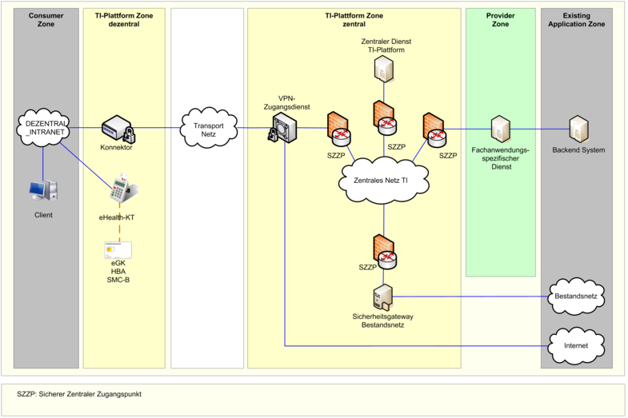
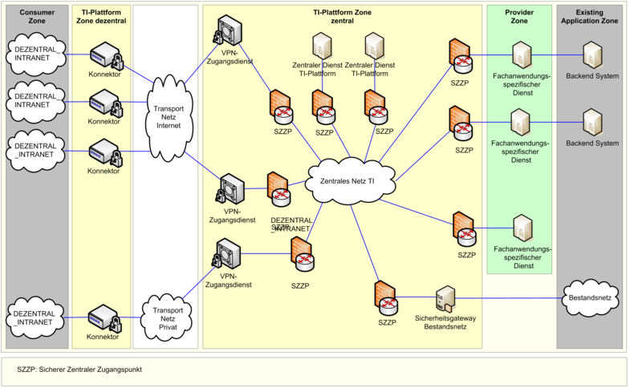
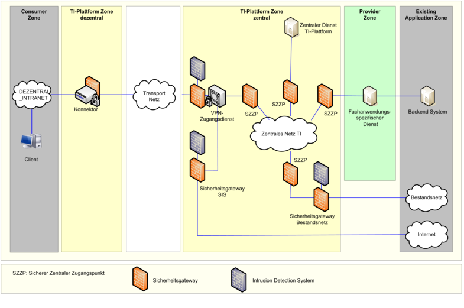
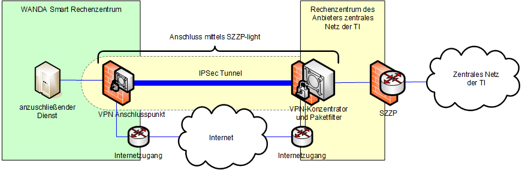
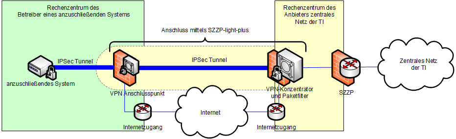
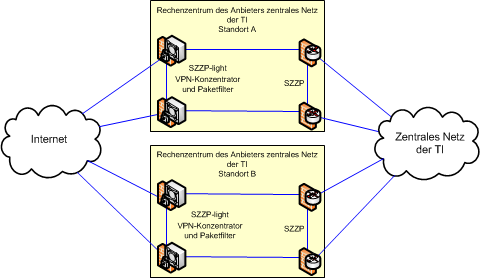
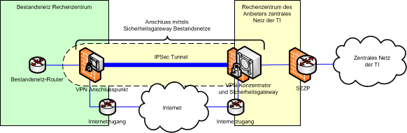
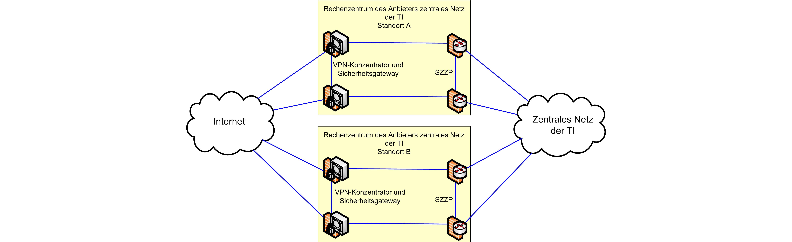
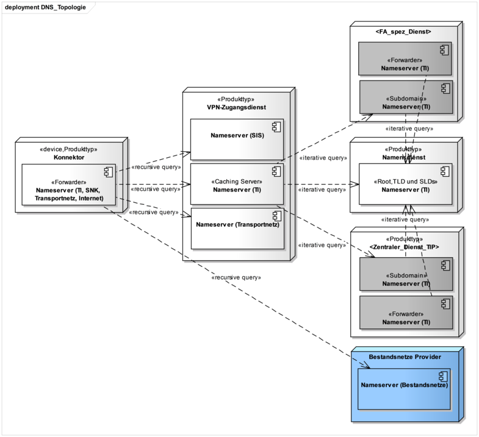
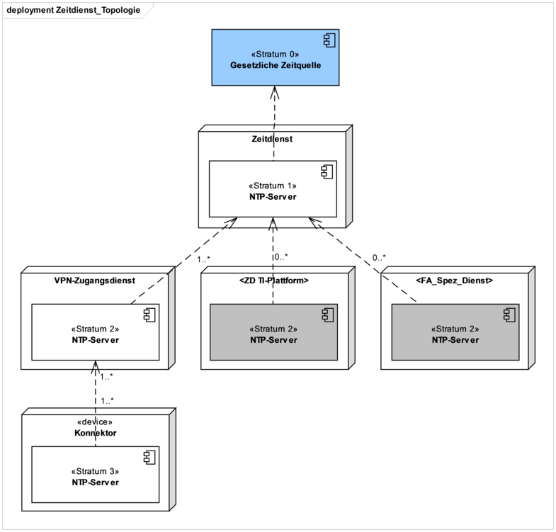

Elektronische Gesundheitskarte und Telematikinfrastruktur
Übergreifende Spezifikation
Netzwerk
| Version | 1.23.0 |
| Revision | 571829 |
| Stand | 16.12.22 |
| Status | freigegeben |
| Klassifizierung | öffentlich |
| Referenzierung | gemSpec_Net |
Änderungen zur Vorversion
Anpassungen des vorliegenden Dokumentes im Vergleich zur Vorversion können Sie der nachfolgenden Tabelle entnehmen.
Bitte beachten Sie die Hinweise zur Einführung der Benennungen 'WANDA Basic' und 'WANDA Smart' (siehe Dokumentenhistorie).
Dokumentenhistorie
| Version |
Datum |
Kap./ Seite |
Grund der Änderung, besondere Hinweise |
Bearbeitung |
|---|---|---|---|---|
| 0.5.0 |
20.07.12 |
zur Abstimmung freigegeben |
PL P77 |
|
| 0.6.0 |
31.08.12 |
Einarbeitung von Änderungen aus dem Kommentierungsverfahren |
P77 |
|
| 1.0.0 |
15.10.12 |
Korrekturen |
gematik |
|
| 1.1.0 |
12.11.12 |
Einarbeitung Kommentare aus übergreifender Konsistenzprüfung |
gematik |
|
| 1.2.0 |
13.06.13 |
Überarbeitung anhand interner Änderungsliste (Fehlerkorrekturen, Inkonsistenzen), Einarbeitung Kommentare LA |
gematik |
|
| 1.3.0 |
15.08.13 |
Einarbeitung Kommentar und gemäß Änderungsliste |
gematik |
|
| 1.4.0 |
21.02.14 |
Losübergreifende Synchronisation |
gematik |
|
| 1.5.0 |
17.06.14 |
[RFC4594bis] ersetzt durch [RFC4594], [RFC2672] gelöscht (Anforderung entfällt), Ergänzung DNSSEC-Vertrauensanker-Aktualisierung gemäß [RFC5011] und Formulierungsanpassungen gemäß P11-Änderungsliste |
gematik |
|
| 1.6.0 |
17.07.15 |
Errata 1.4.4 und KOM-LE-Anpassungen eingearbeitet |
gematik |
|
| 1.7.0 |
03.05.16 |
Anpassungen zum Online-Produktivbetrieb (Stufe 1) |
gematik |
|
| 1.8.0 |
24.08.16 |
Einarbeitung weiterer Kommentare |
gematik |
|
| 1.9.0 |
28.10.16 |
Anpassungen gemäß Änderungsliste |
gematik |
|
| 1.10.0 |
06.02.17 |
Anpassungen gemäß Änderungsliste |
gematik |
|
| 1.11.0 |
21.04.17 |
Anpassungen gemäß Änderungsliste |
gematik |
|
| 08.12.17 |
Überarbeitung Online-Produktivbetrieb (Stufe 2.1) |
gematik |
||
| 1.12.0 |
18.12.17 |
Einarbeitungen aufgrund der Errata 1.6.4-2 und 1.6.4-3 |
gematik |
|
| 1.13.0 |
14.05.18 |
Einarbeitung Änderungslisten P15.2 und P15.4 |
gematik |
|
| 1.14.0 |
26.10.18 |
Einarbeitung Änderungslisten P15.8 und P15.9 |
gematik |
|
| 1.15.0 | 15.05.19 | Einarbeitung Änderungslisten P18.1 |
gematik |
|
| 1.16.0 | 02.10.19 | Einarbeitung P16.1/2 | gematik |
|
| 1.17.0 | 02.03.20 | Anpassungen auf Grundlage P21.1 | gematik | |
| 1.17.1 | 26.06.20 | Anpassungen auf Grundlage P21.3 | gematik | |
| 1.18.0 | 30.06.20 | Anpassungen gemäß Änderungsliste P22.1 und Scope-Themen aus Systemdesign R4.0.0 | gematik | |
| 1.18.1 | 23.07.20 | Aktualisierung der Quellen, Einpflegen von Verweisen auf BSI ISI-LANA | gematik | |
| 1.19.0 | 12.11.20 | Anpassungen gemäß Änderungsliste P22.2 und Scope-Themen aus Systemdesign R4.0.1 | gematik | |
| 1.20.0 | 19.02.21 | Anpassungen gemäß Änderungsliste P22.5 | gematik | |
| 1.20.1 | 31.03.21 | Kap. 5.3 | Anpassung Domainnamen | gematik |
| 1.20.2 | 09.07.21 | Einarbeitung CI_Maintenance_21.1 | gematik | |
| 1.20.3 | 31.08.21 | Redaktionelle Umbenennung von aAdG NetG in WANDA Basic aAdG und NetG-TI in WANDA Smart. | gematik | |
| 1.20.4 | 11.10.21 | Anpassung Dokumentenhistorien-Hinweis: ab Release "Konnektor PTV 5.0.2: Maintenance 21.5" (Sept. 2021) führt die gematik eine stufenweise Umbenennung folgender Begriffe durch: aus "aAdG-NetG" wird "WANDA Basic", aus "aAdG" und "aAdG-NetG-TI" wird "WANDA Smart" (nähere Informationen finden Sie unter https://fachportal.gematik.de/) |
gematik | |
| 1.21.0 | 21.01.22 | Einarbeitung CI_Maintenance_21.2: Ergänzung des neuen Anbindungstyp SZZP-light-plus, die Verwendung von TI-Adressen für WANDA Basic, Einarbeitung weiterer Änderungsbedarfe für das IP4-Konzept sowie zur Laufzeit des DNSSec Trust Anchors | gematik | |
| 1.22.0 | 29.04.22 | Einarbeitung CI_Maintenance_22.2: Anpassung der Anforderung GS-A_4029-05 (Tabelle 2) und GS-A_4850-04 (Tabelle 3) zur Flexibilisierung der Netzmaske für WANDA-Smart-Anbieter | gematik | |
| 1.23.0 | 16.12.22 | Kap. 2.3.3 Kap. 8.5.2 |
Einarbeitung CI_Maintenance_22.6: Anpassung IPv4-Adresskonzept für die PU sowie Aktualisierung der referenzierter Quellen | gematik |
Die Spezifikation Netzwerk definiert die Rahmenbedingungen und trifft die übergreifenden Festlegungen zum Netzwerk, dem Namensdienst und dem Zeitdienst in der TI. Dabei werden die für den Wirkbetrieb der TI erforderlichen Anforderungen an die Netzinfrastruktur berücksichtigt, eine Erweiterbarkeit um künftige Anwendungen jedoch beachtet.
Die übergreifende Spezifikation Netzwerk behandelt folgende inhaltlichen Schwerpunkte:
Das Dokument richtet sich an Hersteller und Anbieter von netzwerkfähigen Produkten der TI.
Dieses Dokument enthält normative Festlegungen zur Telematikinfrastruktur des deutschen Gesundheitswesens. Der Gültigkeitszeitraum der vorliegenden Version und deren Anwendung in Zulassungsverfahren wird durch die gematik GmbH in gesonderten Dokumenten (z. B. Dokumentenlandkarte, Produkttypsteckbrief, Leistungsbeschreibung) festgelegt und bekannt gegeben.
Schutzrechts-/Patentrechtshinweis
Die nachfolgende Spezifikation ist von der gematik allein unter technischen Gesichtspunkten erstellt worden. Im Einzelfall kann nicht ausgeschlossen werden, dass die Implementierung der Spezifikation in technische Schutzrechte Dritter eingreift. Es ist allein Sache des Anbieters oder Herstellers, durch geeignete Maßnahmen dafür Sorge zu tragen, dass von ihm aufgrund der Spezifikation angebotene Produkte und/oder Leistungen nicht gegen Schutzrechte Dritter verstoßen und sich ggf. die erforderlichen Erlaubnisse/Lizenzen von den betroffenen Schutzrechtsinhabern einzuholen. Die gematik GmbH übernimmt insofern keinerlei Gewährleistungen.
Festlegungen zu der Netzwerkkomponente VPN-Zugangsdienst erfolgen in [gemSpec_VPN_ZugD].
Die Festlegung der spezifischen Anbindungen von Komponenten an die Netzinfrastruktur der TI und die Einbindung der Netzdienste erfolgen auf der Basis dieser übergreifenden Spezifikation in den jeweiligen Spezifikationen der Produkttypen.
Anforderungen als Ausdruck normativer Festlegungen werden durch eine eindeutige ID sowie die dem RFC 2119 [RFC2119] entsprechenden, in Großbuchstaben geschriebenen deutschen Schlüsselworte MUSS, DARF NICHT, SOLL, SOLL NICHT, KANN gekennzeichnet.
Sie werden im Dokument wie folgt dargestellt:
<AFO-ID> - <Titel der Afo>
Text / Beschreibung
[<=]
Dabei umfasst die Anforderung sämtliche zwischen Afo-ID und Textmarke angeführten Inhalte.
In diesem Kapitel wird die grundlegende Netztopologie der TI dargestellt um einen Überblick der beteiligten Systeme auf der Netzwerkebene zu geben. In den Spezifikationen der jeweiligen Produkttypen erfolgt, wo notwendig, eine detaillierte Darstellung der einzusetzenden Netztopologie.
Die Abb_NetzTopologie_Schema zeigt eine schematische Übersicht zur Netztopologie der TI auf logischer Ebene, die sich an den in der Gesamtarchitektur definierten Zonen orientiert.

Abbildung 1: Abb_NetzTopologie_Schema, Netztopologie der TI
In Abb_NetzTopologie_Detail wird auf einer detaillierteren Netzwerkebene die mögliche Verteilung von an der TI-Plattform angebundenen Produkttypen dargestellt (ohne Secure Internet Service (SIS)).
Der Adressat „weitere Anwendungen des Gesundheitswesens“ umfasst die Anwendungskategorien WANDA Basic und WANDA Smart.
Der Adressat „weitere Anwendungen des Gesundheitswesens mit Zugriff auf Dienste der TI“ wird durch die Anwendungskategorien WANDA Smart und der Adressat „weitere Anwendungen des Gesundheitswesens ohne Zugriff auf Dienste der TI“ durch die Anwendungskategorie WANDA Basic beschrieben.

Abbildung 2: Abb_NetzTopologie_Detail, Netzwerktopologie der TI - detailliert
GS-A_4009
Alle Produkttypen der TI und Anbieter weiterer Anwendungen des Gesundheitswesens mit Zugriff auf Dienste der TI MÜSSEN beim Einsatz des Ethernet-Protokolls an Schnittstellen zwischen Produkttypen der TI die Einhaltung der [IEEE 802.3] sicherstellen.
<=
Als produktiv eingesetztes Netzwerkprotokoll auf der OSI-Schicht 3 wird in der TI das Internetprotokoll in der Version 4 (IPv4) eingesetzt. Als Teil der laufenden Migration wird bei definierten Produkttypen bereits die Unterstützung des Internetprotokolls in der Version 6 (IPv6) gefordert. Vorgaben zum Protokoll Encapsulation Security Payload (ESP) werden in [gemSpec_VPN_ZugD] definiert.
GS-A_4831
Produkttypen der TI und weitere Anwendungen des Gesundheitswesens MÜSSEN mindestens die in Tab_Standards_IPv4 aufgeführten Standards unterstützen.
Tabelle 1: Tab_Standards_IPv4, Standards IPv4
| Standard |
Beschreibung |
|---|---|
| [RFC768] |
User Datagram Protocol |
| [RFC791] |
Internet Protocol |
| [RFC792] |
Internet Control Message Protocol |
| [RFC793] |
Transmission Control Protocol |
| [RFC826] |
Ethernet Address Resolution Protocol |
| [RFC894] |
Standard for the Transmission of IP Datagrams over Ethernet Networks |
| [RFC1122] |
Requirements for Internet Hosts – Communication Layers |
GS-A_4832
Produkttypen der TI und andere Anwendungen des Gesundheitswesens MÜSSEN sicherstellen, dass Path MTU Discovery (PMTUD) gemäß [RFC1191] im gesamten Netzwerk funktioniert. Insbesondere MÜSSEN Router und Gateways die erforderlichen ICMP-Messages erzeugen, und Sicherheitsgateways MÜSSEN diese ICMP-Messages passieren lassen. Anfragen durch einen ICMP-Request MÜSSEN mit einem ICMP-Reply beantwortet werden.
<=
GS-A_4010
Produkttypen, die zentrale Dienste der TI-Plattform bereitstellen, MÜSSEN die in [RIPE-772] für die jeweilige Geräteklasse unter Mandatory Support aufgeführten Anforderungen erfüllen.
<=
GS-A_4011
Zentrale Dienste der TI-Plattform MÜSSEN IPv4 und IPv6 parallel als Protokoll (Dual-Stack-Mode) unterstützen. Die TSP X.509 SOLLEN IPv4 und IPv6 parallel unterstützen.
<=GS-A_4012
Produkttypen, die zentrale Dienste der TI-Plattform bereitstellen, MÜSSEN IPv4 und IPv6 als Protokoll unterstützen, wobei für beide Protokolle eine vergleichbare Leistung vorhanden sein muss, d. h. weniger als 15% Unterschied zwischen den beiden Protokollen bei Input, Output, Durchsatz, Weiterleitung und Verarbeitung.
A_17824
Zentrale Dienste der TI-Plattform MÜSSEN an ihren Außenschnittstellen zu anderen Komponenten und Diensten der TI sowie WANDA Basic und WANDA Smart im zentralen Netz der TI und im Internet IPv4 und IPv6 parallel als Protokoll im Dual-Stack-Mode nutzen. <=
Für die Implementierung von TCP und UDP werden an dieser Stelle keine normativen Vorgaben erhoben. Es wird empfohlen Implementierungen von TCP/IP-Stacks zu nutzen, die aktuelle Verfahren zur Übertragung und Steuerung von Daten einsetzen.
Für die Verwaltung und Dokumentation von UDP/TCP-Portbereichen ist in der TI ein übergreifender Prozess zu etablieren, der durch den Anbieter Zentrales Netz TI implementiert und vom Gesamtbetriebsverantwortlichen (GBV) freigegeben wird.
In den folgenden Anforderungen werden die Verantwortlichkeiten und weitere Vorgaben zum Prozess „Verwaltung von UDP/TCP-Portbereichen“ definiert.
GS-A_4833
Der Anbieter Zentrales Netz TI MUSS den Prozess „Verwaltung von UDP/TCP-Portbereichen“ mit den folgenden Inhalten definieren und implementieren:
Erstellung und Pflege eines Vergabeschemas für UDP/TCP-Portbereiche
Operative Vergabe von UDP/TCP-Portbereichen
Erstellung und Pflege von Dokumentations- und Reportingschemas
Dokumentation und Reporting von UDP/TCP-Portbereichen
Der Anbieter Zentrales Netz TI ist der Verantwortliche für den gesamten Prozess.
<=GS-A_4886
Der GBV MUSS den vom Anbieter Zentrales Netz TI definierten Prozess „Verwaltung von UDP/TCP-Portbereichen“ freigeben.
<=GS-A_4014
Der GBV MUSS für die Zuteilung von UDP/TCP-Portbereichen ein Vergabeschema unter Berücksichtung der Dienstklassen zur Netzwerkpriorisierung erstellen und dem Anbieter Zentrales Netz TI zur Verfügung stellen.
Der GBV MUSS das Vergabeschema für UDP/TCP-Portbereiche auf Grundlage des [RFC6335] erstellen. Der GBV MUSS für die Vergabe von UDP/TCP-Portbereichen den in [RFC6335] definierten Bereich von 49152-65535 (Dynamic/Private Ports) nutzen. Hiervon ausgenommen sind Anwendungen die in [RFC6335] definierte Bereiche der System Ports (Well-Known Ports) bzw. User Ports (Registered Ports) nutzen.
<=
GS-A_4016
Der Anbieter Zentrales Netz TI MUSS UDP/TCP-Portbereiche nach den Vorgaben des Vergabeschemas an die einzelnen Anbieter der Produkttypen der TI bedarfsgerecht zuweisen. Die Vergabe der UDP/TCP-Portbereiche erfolgt im Rahmen des Test- und Zulassungsverfahrens von Anbietern eines Produkttyps.
<=GS-A_4013
Produkttypen von Fachanwendungen und Zentralen Diensten der TI-Plattform und Anbieter weiterer Anwendungen des Gesundheitswesens mit Zugriff auf Dienste der TI MÜSSEN die zugeordneten bzw. abgestimmten UDP/TCP-Portbereiche für die Kommunikation in der TI nutzen.
<=
GS-A_4753
Der GBV MUSS in Abstimmung mit dem Anbieter Zentrales Netz TI das Dokumentationsformat für die UDP/TCP-Portbereiche festlegen und dem Anbieter von Produkttypen der TI zur Verfügung stellen.
<=GS-A_4017
Der Anbieter Zentrales Netz TI MUSS die Vergabe der UDP/TCP-Portbereiche dokumentieren und diese Dokumentation dem GBV bei Änderungen und auf Anforderung zur Verfügung stellen.
<=GS-A_4018
Die Anbieter von Produkttypen der TI und Anbieter weiterer Anwendungen des Gesundheitswesens mit Zugriff auf Dienste der TI MÜSSEN die Nutzung der zugeteilten und mit den Anbietern weiterer Anwendungen des Gesundheitswesens mit Zugriff auf Dienste der TI abgestimmten UDP/TCP-Portbereiche dokumentieren und diese Dokumentation dem Anbieter Zentrales Netz TI bei Änderungen und auf Anforderung zur Verfügung stellen.
<=
Anforderungen zu den einzusetzenden kryptographischen Verfahren für TLS und daraus folgende resultierende Vorgaben zur TLS-Version werden in [gemSpec_Krypt] definiert.
Weitere Eigenschaften und Funktionen für das TLS-Protokoll können wo notwendig in den Spezifikationen von Produkttypen festgelegt werden.
In diesem Kapitel werden Festlegungen zu den in der TI zu nutzenden IP-Adressbereichen getroffen. Alle Anbieter von Produkttypen müssen das IP-Adresskonzept der TI produktiv umsetzen.
Die IP-Adressen in der TI werden in festen Adressblöcken an die Nutzer vergeben. Die zu nutzenden IP-Adressblöcke werden den definierten TI-Umgebungen und den dazugehörigen Netzbereichen zugeteilt.
Für jede TI-Umgebung werden zusätzlich IP-Adressblöcke als Reserve definiert.
TI-Umgebungen:
Netzbereiche:
Informativ wird zusätzlich der Netzbereich TI_Extern aufgeführt:
Über diese Netzbereiche werden hier keine Festlegungen getroffen, Adressvergabe geschieht durch die Besitzer oder Anbieter.
Für die Verwaltung und Dokumentation von IP-Adressen ist in der TI ein übergreifender Prozess zu etablieren, der durch den Anbieter Zentrales Netz TI implementiert und vom GBV freigegeben wird.
Die in der TI genutzten IP-Adressen werden von dem Anbieter Zentrales Netz TI verwaltet und im Auftrag des GBVs vergeben. Der Anbieter delegiert IP-Bereiche aus den spezifizierten Bereichen an Anbieter von TI-Produkttypen.
In den folgenden Anforderungen werden die Verantwortlichkeiten und weitere Vorgaben zum Prozess „Verwaltung von IP-Adressbereichen“ definiert.
GS-A_4834
Der Anbieter Zentrales Netz TI MUSS den Prozess „Verwaltung von IP-Adressbereichen“ mit den folgenden Inhalten definieren und implementieren:
Pflege des IP-Adresskonzeptes für die TI
Freigabe von zu nutzenden IP-Adressbereichen
Operative Zuweisung von IP-Adressbereichen
Erstellung und Pflege von Dokumentations- und Reportingschemas
Dokumentation und Reporting der genutzten IP-Adressbereiche
Der Anbieter Zentrales Netz TI ist der Verantwortliche für den gesamten Prozess.
<=GS-A_4888
Der GBV MUSS den vom Anbieter Zentrales Netz TI definierten Prozess „Verwaltung von IP-Adressbereichen“ freigeben.
<=GS-A_4021
Der GBV MUSS für die Nutzung erlaubte IP-Adressbereiche und deren Vergabe in der TI freigeben.
<=GS-A_4022
Der Anbieter Zentrales Netz TI MUSS die Adressvergabe operativ mit dem GBV und den Anbietern der Produkttypen in der TI koordinieren.
<=GS-A_4023
Der Anbieter Zentrales Netz TI MUSS im Rahmen des Test- und Zulassungsverfahrens IP-Adressbereiche an die einzelnen Anbieter der Produkttypen bedarfsgerecht zuweisen.
<=GS-A_4754
Der Anbieter Zentrales Netz TI SOLL den IP-Adressbereich als zusammenhängendes Subnetz (IPv4) an die einzelnen Anbieter der Produkttypen vergeben. Als Reservenetz soll er das darauf folgende, gleich große Subnetz vergeben, das jedoch nur nach Freigabe durch den Anbieter Zentrales Netz TI genutzt werden darf.
<=GS-A_4024-01
Alle Anbieter von Diensten in der TI und WANDA-Smart-Anbieter MÜSSEN für ihre über die TI erreichbaren Systeme die zugewiesenen IP-Bereiche nutzen. Bei einem WANDA-Smart-Anbieter können es vom Anbieter bereitgestellte öffentliche IP-Adressen sein. Änderungen an diesen Bereichen MÜSSEN die Anbieter einzelner TI-Dienste bei dem Anbieter Zentrales Netz TI beantragen und bei Verwendung eigener öffentlicher IP-Adressen mit dem Anbieter Zentrales Netz TI abstimmen.
WANDA-Basic-Anbieter mit zugewiesenen TI-IPv4-Adressen MÜSSEN für ihre über die TI erreichbaren Systeme die TI-IPv4-Adressen nutzen. <=
GS-A_4026
Der Anbieter Zentrales Netz TI MUSS die Vergabe der IP-Adressbereiche dokumentieren und diese Dokumentation dem GBV bei Änderungen und auf Anforderung zur Verfügung stellen.
<=GS-A_4756
Der Anbieter Zentrales Netz TI MUSS das Format zum Reporting der IP-Adressbereiche festgelegen.
<=GS-A_4027
Alle Anbieter von Diensten in der TI und Anbieter weiterer Anwendungen des Gesundheitswesens mit Zugriff auf Dienste der TI MÜSSEN dem Anbieter Zentrales Netz TI die Vergabe der IP-Adressbereiche dokumentieren und Änderungen an den Anbieter Zentrales Netz TI melden. Die Anbieter MÜSSEN jeweils sowohl die Änderungen als auch die Gesamtübersicht zum zugewiesenen Adressblock melden. Die Dokumentation der Nutzung von dynamisch vergebenen IP-Adressen soll nicht erfolgen.
<=
GS-A_4028
Der GBV MUSS die in Tabelle Tab_Adrkonzept_Produktiv mit "Reserve" markierten IP-Adressbereiche im Bedarfsfall freigeben und an den Anbieter Zentrales Netz TI zur operativen Verteilung vergeben.
<=GS-A_4758-01
Der Anbieter Zentrales Netz MUSS für die Adressierung der SZZPs in Richtung Produkttyp IP-Adressen aus dem zugewiesenen /26 IP-Bereich des angeschlossenen Produkttyps nutzen. Die Adressierung für den Produkttyp Highspeed Konnektor ist von dieser Regelung ausgenommen und der Anbieter Zentrales Netz SOLL in Absprache mit dem Betreiber der Highspeed Konnektoren /28, /29 oder /30 IP-Bereiche nutzen.
<=
GS-A_4759-01
Anbieter von an das Zentrale Netz der TI angeschlossenen Produkttypen MÜSSEN für die Adressierung ihrer Systeme in Richtung SZZP IP-Adressen aus dem ihnen zugewiesenen /26 IP-Bereich nutzen.
Die Betreiber von Highspeed Konnektoren, die an das Zentrale Netz der TI angeschlossen sind, MÜSSEN für die Adressierung ihrer Systeme in Richtung SZZP-light-plus IP-Adressen aus dem ihnen zugewiesenen /28, /29 oder /30 IP-Bereich nutzen.
Ein Anbieter weiterer Anwendungen des Gesundheitswesens mit Zugriff auf Dienste der TI MUSS für die Adressierung ihrer Systeme in Richtung SZZP die mit dem Anbieter Zentrales Netz TI abgestimmten IP-Adressen nutzen. <=
Die folgenden Tabellen legen die zu verwendenden IPv4-Adressbereiche für die einzelnen TI-Umgebungen fest.
Die Anbieter von TI-Produkttypen erhalten in der Produktivumgebung Adressbereiche aus dem IPv4-Adressraum 100.64.0.0/10 [RFC6598]. Durch die Nutzung des in [RFC6598] definierten Adressbereiches wird ein Konflikt mit bereits genutzten privaten Adressbereichen vermieden. Die Testumgebung ist getrennt und nutzt den Adressraum 172.16.0.0/12.
GS-A_4029-06
Der Anbieter Zentrales Netz TI MUSS den Adressbereich 100.64.0.0/10 nach dem in der Tab_Adrkonzept_Produktiv definierten Schema zur Vergabe von IPv4-Adressen an Produkttypen der TI in der Produktivumgebung verwenden.
Tabelle 2: Tab_Adrkonzept_Produktiv, Adressräume IPv4 TI Produktivumgebung
| Netzbereich |
Adressen |
Netz |
Nutzung |
Verantwortlich |
|---|---|---|---|---|
| TI-Produktivumgebung | 4M | 100.64.0.0/10 | TI Produktiv | Anbieter Zentrales Netz TI und GBV |
| TI_Dezentral (TI_Dezentral_SIS) (siehe Erläuterung) |
2M | 100.64.0.0/11 | Dezentral (Dezentral SIS) |
Anbieter Zentrales Netz TI |
| Konnektoren und Consumer | 2M | 100.64.0.0/11 | Konnektoren TI, Basis- u. KTR-Consumer (Konnektoren SIS) |
Anbieter Zugangsdienst, Betreiber von Basis- u. KTR-Consumer |
| Highspeed Konnektoren | 4096 | 100.95.240.0/20 | Highspeed Konnektoren | Anbieter Zentrales Netz TI Betreiber von Highspeed Konnektoren |
| TI_Zentral | 256K | 100.96.0.0/14 | Zentrale Dienste | Anbieter Zentrales Netz TI |
| Zentrale Dienste | 64K | 100.96.0.0/16 | Zentrale Dienste | Anbieter Zentraler Dienste |
| Der Anbieter Zentrales Netz TI weist jedem zentralen Dienst ein /26 Adressblock aus dem Bereich 100.96.0.0/16 zu. | ||||
| VPN-Zugangsdienst | 64K | 100.97.0.0/16 | Anschluss VPN-Konzentratoren an die TI | Anbieter Zugangsdienst |
| Der Anbieter Zentrales Netz TI weist jedem VPN-Zugangsdienstprovider ein /26 Adressblock aus dem Bereich 100.97.0.0/16 zu. | ||||
| Reserveblöcke | 128K | 100.98.0.0/15 | Reserve | Anbieter Zentrales Netz TI |
| Anwendungsdienste | 256K | 100.100.0.0/14 | Fachdienste | Anbieter Zentrales Netz TI |
| Offene Dienste | 32K 64K |
100.102.0.0/17 100.103.0.0/16 |
Offene Fachdienste oder Dienste eines SÜV |
Anbieter Offene Fachdienste oder Dienste eines SÜV |
| Der Anbieter Zentrales Netz TI weist jedem Offenen Fachdienst ein /26 Adressblock aus dem Bereich 100.102.0.0/17 zu | ||||
| 32K | 100.102.128.0/17 | WANDA Smart WANDA Basic |
Anbieter WANDA Smart Anbieter WANDA Basic |
|
| Der Anbieter Zentrales Netz TI weist den WANDA-Basic- sowie WANDA-Smart-Anbietern bei Bedarf einen /26, /27, /28 oder /29 Adressblock aus dem Bereich 100.102.128.0/17 zu. | ||||
| Gesicherte Fachdienste | 64K 64K |
100.100.0.0/16 100.101.0.0/16 |
Gesicherte Fachdienste | Anbieter Gesicherte Fachdienste |
| Der Anbieter Zentrales Netz TI weist jedem Gesicherten Fachdienst ein /26 Adressblock aus dem Bereich 100.100.0.0/16 zu | ||||
| TI_Dezentral_SIS (siehe Erläuterung) | 256k | 100.104.0.0/14 | Dezentral SIS | Anbieter Zentrales Netz TI |
| Konnektoren | 128k | 100.104.0.0/15 | Konnektoren SIS | Anbieter Zugangsdienst |
| Reserveblock | 128k | 100.106.0.0/15 | Reserve | Anbieter Zentrales Netz TI |
| TI_Betriebsreserve | 1.5M | 100.108.0.0/14 100.112.0.0/12 |
Reserve | Anbieter Zentrales Netz TI |
Erläuterung:
Aus dem Netzbereich 100.64.0.0/11 sollen nur noch IP-Adressblöcke für den dezentralen Zugang zur TI (TI_Dezentral) zugeteilt werden. Die IP-Adressblöcke, die schon für den Zugang SIS eingeteilt wurden, bleiben bestehen und müssen nicht verändert werden.
Für den dezentralen SIS-Zugang muss dem Anbieter des VPN-Zugangsdienstes der IP-Adressblock 100.104.0.0/15 zugewiesen werden. Somit ist der IP-Adressblock TI_Dezentral_SIS für jeden VPN-Zugangsdienstanbieter identisch.
GS-A_4850-04
Der Anbieter Zentrales Netz TI MUSS den Adressbereich 172.16.0.0/12 nach dem in Tab_Adrkonzept_Test definierten Schema zur Vergabe von IPv4-Adressen an Produkttypen der TI in der Testumgebung verwenden.
Tabelle 3: Tab_Adrkonzept_Test, Adressräume IPv4 TI-Testumgebung
| Netzbereich |
Adressen |
Netz |
Nutzung |
Verantwortlich |
|---|---|---|---|---|
| TI-Testumgebung |
1M |
172.16.0.0/12 |
TI Test |
Anbieter Zentrales Netz TI |
| TI_Test_Dezentral (TI_Test_Dezentral_SIS) (siehe Erläuterung) |
512K |
172.16.0.0/13 |
Dezentral TI (Dezentral SIS) |
Anbieter Zentrales Netz TI |
| Konnektoren und Consumer | 512K |
172.16.0.0/13 |
Konnektoren TI, Basis- u. KTR-Consumer (SIS) |
Anbieter Zugangsdienst, Betreiber von Basis- u. KTR-Consumer |
| Highspeed Konnektoren | 254 | 172.16.247.0/24 | Highspeed Konnektoren | Anbieter Zentrales Netz TI Betreiber von Highspeed Konnektoren |
| TI_Test_Zentral | 256K | 172.24.0/14 | Zentrale Dienste |
Anbieter Zentrales Netz TI |
| Zentrale Dienste | 64K |
172.24.0.0/16 |
Zentrale Dienste | Anbieter Zentraler Dienste |
| Der Anbieter Zentrales Netz TI weist jedem zentralen Dienst ein /26 Adressblock aus dem Bereich 172.24.0.0/15 zu. | ||||
| VPN-Zugangsdienst |
64K |
172.25.0.0/16 |
Anschluss VPN-Konzentratoren an die TI |
Anbieter Zugangsdienst |
| Der Anbieter Zentrales Netz TI weist jedem VPN-Zugangsdienstprovider ein /26 Adressblock aus dem Bereich 172.25.0.0/16 zu. | ||||
| Reserveblöcke |
128K |
172.26.0.0/15 |
Reserve |
Anbieter Zentrales Netz TI |
| Test_Anwendungsdienste |
256K |
172.28.0.0/14 |
Fachdienste |
Anbieter Zentrales Netz TI |
| Offene Dienste | 32K 32K |
172.30.0.0/17 172.31.128.0/17 |
Offene Fachdienste oder Dienste eines SÜV |
Anbieter Offene Fachdienste oder Dienste eines SÜV |
| Der Anbieter Zentrales Netz TI weist jedem Offenen Fachdienst ein /26 Adressblock aus dem Bereich 172.30.0.0/17 zu. |
||||
| 32K |
172.30.128.0/17 |
WANDA Smart WANDA Basic |
Anbieter WANDA Smart Anbieter WANDA Basic |
|
| Der Anbieter Zentrales Netz TI weist den WANDA-Basic- sowie WANDA-Smart-Anbietern bei Bedarf einen /26, /27, /28 oder /29 Adressblock aus dem Bereich 172.30.128.0/17 zu. |
||||
| Gesicherte Fachdienste |
64K 32K |
172.28.0.0/16 172.31.0.0/17 |
Gesicherte Fachdienste |
Anbieter Gesicherte Fachdienste |
| Der Anbieter Zentrales Netz TI weist jedem Gesicherten Fachdienst ein /26 Adressblock aus dem Bereich 172.28.0.0/16 zu. |
||||
| (TI_Test_Dezentral_SIS) (siehe Erläuterung) |
172.29.0.0/16 |
Dezentral SIS |
Anbieter Zentrales Netz TI |
|
| Konnektoren | 64K |
172.29.0.0/16 |
Konnektoren SIS |
Anbieter Zugangsdienst |
Erläuterung:
Aus dem Netzbereich 172.16.0.0/14 sollen nur noch IP-Adressblöcke für den dezentralen Zugang zur TI (TI_Dezentral) zugeteilt werden. Die IP-Adressblöcke, die schon für den Zugang SIS eingeteilt wurden, bleiben bestehen und müssen nicht verändert werden.
Für den dezentralen SIS-Zugang muss dem Anbieter des VPN-Zugangsdienstes der IP-Adressblock 172.29.0.0/16 fest zugewiesen werden. Somit ist der IP-Adressblock TI_Dezentral_SIS für jeden VPN-Zugangsdienstanbieter identisch.
Die Netzwerkbereiche 172.31.0.0/17 und 172.31.128.0/17 sind den gesicherten bzw. offenen Fachdiensten zugewiesen worden, um weitere QoS-Klassen auf IP-Ebene abbilden zu können.
GS-A_4851
In der Referenzumgebung DÜRFEN die Adressbereiche aus der Produktivumgebung und Testumgebung NICHT genutzt werden. Für die Vergabe von IPv4-Adressen in der Referenzumgebung SOLL das in Tab_Adrkonzept_Test definierte Schema (nicht der IP-Adressbereich) genutzt werden.
<=In Tabelle 4 wird informativ die Nutzung von IPv4-Adressbereichen aus Netzbereich TI_Extern dargestellt.
Tabelle 4: Adressräume IPv4 TI Extern
| Netzbereich |
Adressen |
Netz |
Nutzung |
Verantwortlicher |
|---|---|---|---|---|
| TI Extern | Werden hier nicht festgelegt. | Extern | Extern | |
| DEZ_Transport | Keine Vorgabe | Dezentral Internet | Anbieter Zugangsdienst | |
| Bestandsnetze | Öffentliche Adressen | Bestandsnetze | Bestandsnetze | |
| DEZENTRAL_INTRANET | keine Vorgabe | LE | LE | |
| VPN_TRANSPORT_TI | Öffentliche Adressen | Zugangsdienst | Anbieter Zugangsdienst | |
| VPN_TRANSPORT_SIS | Öffentliche Adressen | SIS | Anbieter Zugangsdienst | |
| SIS | Öffentliche Adressen | SIS | Anbieter Zugangsdienst | |
GS-A_4760-01
Bestandsnetze und Anbieter weiterer Anwendungen des Gesundheitswesens ohne Zugriff auf Dienste der TI SOLLEN bei Anschluss an die TI für diesen Anschluss und Kommunikation mit der TI eigene, öffentliche IPv4-Adressbereiche nutzen. Ausgenommen sind Anbieter weiterer Anwendungen des Gesundheitswesens ohne Zugriff auf Dienste der TI, die zugewiesene TI-IPv4-Adressen verwenden. <=
Die folgenden Tabellen legen die zu verwendenden IPv6-Adressbereiche für die einzelnen TI-Umgebungen fest.
Die Anbieter von TI-Produkttypen erhalten in der Produktivumgebung Adressbereiche aus dem IPv6-Adressraum 2A10:1982:0000::/32. Die Testumgebung nutzt den IPv6-Adressraum 2A10:1981:0000::/32 und die Referenzumgebung nutzt den IPv6-Adressraum 2A10:1980::/32.
A_19403
Der Anbieter Zentrales Netz TI MUSS den Adressbereich 2A10:1982:0000::/32 nach dem in der Tab_Adrkonzept_Ipv6_Produktiv definierten Schema zur Vergabe von IPv6-Adressen an Produkttypen der TI in der Produktivumgebung verwenden.
Tabelle 5: Tab_Adrkonzept_IPv6_Produktiv, Adressräume IPv6 TI Produktivumgebung
| Netzbereich |
Adressen |
Netz |
Nutzung |
Verantwortlich |
|---|---|---|---|---|
| TI-Testumgebung | 2A10:1982:0000::/32 | TI Produktiv | Anbieter Zentrales Netz TI und GBV | |
| TI_Dezentral_TI | 2A10:1982:0000::/40 | Dezentral TI | Anbieter Zentrales Netz TI | |
| Konnektoren und Consumer TI | 2A10:1982:0000::/40 | Konnektoren TI, Basis- u. KTR-Consumer | Anbieter Zugangsdienst, Betreiber von Basis- u. KTR-Consumer | |
| Zentrale Dienste | 218 Netze | 2A10:1982:0100::/42 | Zentrale Dienste QoS-Klasse Platin |
Anbieter Zentraler Dienste |
| Der Anbieter Zentrales Netz TI weist jedem zentralen Dienst einen /60 Adressblock aus dem Bereich 2A10:1982:0100::/42 zu. | ||||
| 218 Netze | 2A10:1982:0140::/42 | Zentrale Dienste QoS-Klasse Gold |
Anbieter Zentraler Dienste | |
| Der Anbieter Zentrales Netz TI weist jedem zentralen Dienst einen /60 Adressblock aus dem Bereich 2A10:1982:0140::/42 zu. | ||||
| 218 Netze | 2A10:1982:0180::/42 | Zentrale Dienste QoS-Klasse Silber |
Anbieter Zentraler Dienste | |
| Der Anbieter Zentrales Netz TI weist jedem zentralen Dienst einen /60 Adressblock aus dem Bereich 2A10:1982:0180::/42 zu. | ||||
| 218 Netze | 2A10:1982:01C0::/42 | Zentrale Dienste QoS-Klasse Bronze |
Anbieter Zentraler Dienste | |
| Der Anbieter Zentrales Netz TI weist jedem zentralen Dienst einen /60 Adressblock aus dem Bereich 2A10:1982:01C0::/42 zu. | ||||
| VPN-Zugangsdienst | 220 Netze | 2A10:1982:0200::/40 | Anschluss VPN-Konzentratoren an die TI/SIS | Anbieter Zugangsdienst |
| Der Anbieter Zentrales Netz TI weist jedem VPN-Zugangsdienstprovider einen /60 Adressblock aus dem Bereich 2A10:1982:0200::/40 zu. | ||||
| Offene Dienste | 218 Netze | 2A10:1982:0300::/42 | Offene Fachdienste oder Dienste eines SÜV QoS-Klasse Platin |
Anbieter Offene Fachdienste oder Dienste eines SÜV |
| Der Anbieter Zentrales Netz TI weist jedem Offenen Fachdienst einen /60 Adressblock aus dem Bereich 2A10:1982:0300::/42 zu. | ||||
| 218 Netze | 2A10:1982:0340::/42 | Offene Fachdienste oder Dienste eines SÜV QoS-Klasse Gold |
Anbieter Offene Fachdienste oder Dienste eines SÜV | |
| Der Anbieter Zentrales Netz TI weist jedem Offenen Fachdienst einen /60 Adressblock aus dem Bereich 2A10:1982:0340::/42 zu. | ||||
| 218 Netze | 2A10:1982:0380::/42 | Offene Fachdienste oder Dienste eines SÜV QoS-Klasse Silber |
Anbieter Offene Fachdienste oder Dienste eines SÜV | |
| Der Anbieter Zentrales Netz TI weist jedem Offenen Fachdienst einen /60 Adressblock aus dem Bereich 2A10:1982:0380::/42 zu | ||||
| 218 Netze | 2A10:1982:03C0::/42 | Offene Fachdienste oder Dienste eines SÜV QoS-Klasse Bronze |
Anbieter Offene Fachdienste oder Dienste eines SÜV | |
| Der Anbieter Zentrales Netz TI weist jedem Offenen Fachdienst einen /60 Adressblock aus dem Bereich 2A10:1982:03C0::/42 zu. | ||||
| 220 Netze | 2A10:1982:0400::/40 | WANDA Smart | Anbieter WANDA Smart | |
| Der Anbieter Zentrales Netz TI weist den WANDA Smart Anbietern bei Bedarf einen /60 Adressblock aus dem Bereich 2A10:1982:0400::/40 zu. | ||||
| Gesicherte Fachdienste | 218 Netze | 2A10:1982:0500::/42 | Gesicherte Fachdienste QoS-Klasse Platin |
Anbieter Gesicherte Fachdienste |
| Der Anbieter Zentrales Netz TI weist jedem Gesicherten Fachdienst einen /60 Adressblock aus dem Bereich 2A10:1982:0500::/42 zu | ||||
| 218 Netze | 2A10:1982:0540::/42 | Gesicherte Fachdienste QoS-Klasse Gold |
Anbieter Gesicherte Fachdienste | |
| Der Anbieter Zentrales Netz TI weist jedem Gesicherten Fachdienst einen /60 Adressblock aus dem Bereich 2A10:1982:0540::/42 zu. | ||||
| 218 Netze | 2A10:1982:0580::/42 | Gesicherte Fachdienste QoS-Klasse Silber |
Anbieter Gesicherte Fachdienste | |
| Der Anbieter Zentrales Netz TI weist jedem Gesicherten Fachdienst einen /60 Adressblock aus dem Bereich 2A10:1982:0580::/42 zu. | ||||
| 218 Netze | 2A10:1982:05C0::/42 | Gesicherte Fachdienste QoS-Klasse Bronze |
Anbieter Gesicherte Fachdienste | |
| Der Anbieter Zentrales Netz TI weist jedem Gesicherten Fachdienst einen /60. Adressblock aus dem Bereich 2A10:1982:05C0::/42 zu. | ||||
| TI_Dezentral_SIS | 2A10:1982:0600::/40 | Dezentral SIS | Anbieter Zentrales Netz TI | |
| Konnektoren | 2A10:1982:0600::/40 | Konnektoren SIS | Anbieter Zugangsdienst | |
| TI_Betriebsreserve | 2A10:1982:0700::/40 bis 2A10:1982:FF00::/40 |
Reserve | Anbieter Zentrales Netz TI | |
A_19404
Der Anbieter Zentrales Netz TI MUSS den Adressbereich 2A10:1981:0000::/32 nach dem in der Tab_Adrkonzept_IPv6_Test definierten Schema zur Vergabe von IPv6-Adressen an Produkttypen der TI in der Testumgebung verwenden.
Tabelle 6: Tab_Adrkonzept_IPv6_Test, Adressräume IPv6 TI-Testumgebung
| Netzbereich |
Adressen |
Netz |
Nutzung |
Verantwortlich |
|---|---|---|---|---|
| TI-Testumgebung | 2A10:1981:0000::/32 | TI Produktiv | Anbieter Zentrales Netz TI und GBV | |
| TI_Dezentral_TI | 2A10:1981:0000::/40 | Dezentral TI | Anbieter Zentrales Netz TI | |
| Konnektoren und Consumer TI | 2A10:1981:0000::/40 | Konnektoren TI, Basis- u. KTR-Consumer | Anbieter Zugangsdienst, Betreiber von Basis- u. KTR-Consumer |
|
| Zentrale Dienste | 218 Netze | 2A10:1981:0100::/42 | Zentrale Dienste QoS-Klasse Platin |
Anbieter Zentraler Dienste |
| Der Anbieter Zentrales Netz TI weist jedem zentralen Dienst einen /60 Adressblock aus dem Bereich 2A10:1981:0100::/42 zu. | ||||
| 218 Netze | 2A10:1981:0140::/42 | Zentrale Dienste QoS-Klasse Gold |
Anbieter Zentraler Dienste | |
| Der Anbieter Zentrales Netz TI weist jedem zentralen Dienst einen /60 Adressblock aus dem Bereich 2A10:1981:0140::/42 zu. | ||||
| 218 Netze | 2A10:1981:0180::/42 | Zentrale Dienste QoS-Klasse Silber |
Anbieter Zentraler Dienste | |
| Der Anbieter Zentrales Netz TI weist jedem zentralen Dienst einen /60 Adressblock aus dem Bereich 2A10:1981:0180::/42 zu. | ||||
| 218 Netze | 2A10:1981:01C0::/42 | Zentrale Dienste QoS-Klasse Bronze |
Anbieter Zentraler Dienste | |
| Der Anbieter Zentrales Netz TI weist jedem zentralen Dienst einen /60 Adressblock aus dem Bereich 2A10:1981:01C0::/42 zu. | ||||
| VPN-Zugangsdienst | 220 Netze | 2A10:1981:0200::/40 | Anschluss VPN-Konzentratoren an die TI/SIS | Anbieter Zugangsdienst |
| Der Anbieter Zentrales Netz TI weist jedem VPN-Zugangsdienstprovider einen /60 Adressblock aus dem Bereich 2A10:1981:0200::/40 zu. | ||||
| Offene Dienste | 218 Netze | 2A10:1981:0300::/42 | Offene Fachdienste oder Dienste eines SÜV QoS-Klasse Platin |
Anbieter Offene Fachdienste oder Dienste eines SÜV |
| Der Anbieter Zentrales Netz TI weist jedem Offenen Fachdienst einen /60 Adressblock aus dem Bereich 2A10:1981:0300::/42 zu | ||||
| 218 Netze | 2A10:1981:0340::/42 | Offene Fachdienste oder Dienste eines SÜV QoS-Klasse Gold |
Anbieter Offene Fachdienste oder Dienste eines SÜV | |
| Der Anbieter Zentrales Netz TI weist jedem Offenen Fachdienst einen /60 Adressblock aus dem Bereich 2A10:1981:0340::/42 zu | ||||
| 218 Netze | 2A10:1981:0380::/42 | Offene Fachdienste oder Dienste eines SÜV QoS-Klasse Silber |
Anbieter Offene Fachdienste oder Dienste eines SÜV | |
| Der Anbieter Zentrales Netz TI weist jedem Offenen Fachdienst einen /60 Adressblock aus dem Bereich 2A10:1981:0380::/42 zu | ||||
| 218 Netze | 2A10:1981:03C0::/42 | Offene Fachdienste oder Dienste eines SÜV QoS-Klasse Bronze |
Anbieter Offene Fachdienste oder Dienste eines SÜV | |
| Der Anbieter Zentrales Netz TI weist jedem Offenen Fachdienst einen /60 Adressblock aus dem Bereich 2A10:1981:03C0::/42 zu | ||||
| 220 Netze | 2A10:1981:0400::/40 | WANDA Smart | Anbieter WANDA Smart | |
| Der Anbieter Zentrales Netz TI weist den WANDA Smart Anbietern bei Bedarf einen /60 Adressblock aus dem Bereich 2A10:1981:0400::/40 zu | ||||
| Gesicherte Fachdienste | 218 Netze | 2A10:1981:0500::/42 | Gesicherte Fachdienste QoS-Klasse Platin |
Anbieter Gesicherte Fachdienste |
| Der Anbieter Zentrales Netz TI weist jedem Gesicherten Fachdienst einen /60 Adressblock aus dem Bereich 2A10:1981:0500::/42 zu | ||||
| 218 Netze | 2A10:1981:0540::/42 | Gesicherte Fachdienste QoS-Klasse Gold |
Anbieter Gesicherte Fachdienste | |
| Der Anbieter Zentrales Netz TI weist jedem Gesicherten Fachdienst einen /60 Adressblock aus dem Bereich 2A10:1981:0540::/42 zu | ||||
| 218 Netze | 2A10:1981:0580::/42 | Gesicherte Fachdienste QoS-Klasse Silber |
Anbieter Gesicherte Fachdienste | |
| Der Anbieter Zentrales Netz TI weist jedem Gesicherten Fachdienst einen /60 Adressblock aus dem Bereich 2A10:1981:0580::/42 zu | ||||
| 218 Netze | 2A10:1981:05C0::/42 | Gesicherte Fachdienste QoS-Klasse Bronze |
Anbieter Gesicherte Fachdienste | |
| Der Anbieter Zentrales Netz TI weist jedem Gesicherten Fachdienst einen /60 Adressblock aus dem Bereich 2A10:1981:05C0::/42 zu | ||||
| TI_Dezentral_SIS | 2A10:1981:0600::/40 | Dezentral SIS | Anbieter Zentrales Netz TI | |
| Konnektoren | 2A10:1981:0600::/40 | Konnektoren SIS | Anbieter Zugangsdienst | |
| TI_Betriebsreserve | 2A10:1981:0700::/40 bis 2A10:1981:FF00::/40 |
Reserve | Anbieter Zentrales Netz TI | |
A_19407
Der Anbieter Zentrales Netz TI MUSS den Adressbereich 2A10:1980:0000::/32 nach dem in der Tab_Adrkonzept_Ipv6_Refug definierten Schema zur Vergabe von IPv6-Adressen an Produkttypen der TI in der Referenzumgebung verwenden.
Tabelle 7: Tab_Adrkonzept_IPv6_Refug, Adressräume IPv6 TI Referenzumgebung
| Netzbereich |
Menge |
Netz-Präfix |
Nutzung |
Verantwortlich |
|---|---|---|---|---|
| TI-Referenzumgebung | 2A10:1980::/32 | TI Produktiv | Anbieter Zentrales Netz TI und GBV | |
| TI_Dezentral_TI | 2A10:1980:0000::/40 | Dezentral TI | Anbieter Zentrales Netz TI | |
| Konnektoren und Consumer TI | 2A10:1980:0000::/40 | Konnektoren TI, Basis- u. KTR-Consumer | Anbieter Zugangsdienst, Betreiber von Basis- u. KTR-Consumer | |
| Zentrale Dienste | 218 Netze | 2A10:1980:0100::/42 | Zentrale Dienste | Anbieter Zentraler Dienste |
| Der Anbieter Zentrales Netz TI weist jedem zentralen Dienst einen /60 Adressblock aus dem Bereich 2A10:1980:0100::/42 zu. | (QoS-Klasse Platin) | |||
| 218 Netze | 2A10:1980:0140::/42 | Zentrale Dienste | Anbieter Zentraler Dienste | |
| Der Anbieter Zentrales Netz TI weist jedem zentralen Dienst einen /60 Adressblock aus dem Bereich 2A10:1980:0140::/42 zu. | (QoS-Klasse Gold) | |||
| 218 Netze | 2A10:1980:0180::/42 | Zentrale Dienste | Anbieter Zentraler Dienste | |
| Der Anbieter Zentrales Netz TI weist jedem zentralen Dienst einen /60 Adressblock aus dem Bereich 2A10:1980:0180::/42 zu. | (QoS-Klasse Silber) | |||
| 218 Netze | 2A10:1980:01C0::/42 | Zentrale Dienste | Anbieter Zentraler Dienste | |
| Der Anbieter Zentrales Netz TI weist jedem zentralen Dienst einen /60 Adressblock aus dem Bereich 2A10:1980:01C0::/42 zu. | (QoS-Klasse Bronze) | |||
| VPN-Zugangsdienst | 220 Netze | 2A10:1980:0200::/40 | Anschluss VPN-Konzentratoren an die TI/SIS | Anbieter Zugangsdienst |
| Der Anbieter Zentrales Netz TI weist jedem VPN-Zugangsdienstprovider einen /60 Adressblock aus dem Bereich 2A10:1980:0200::/40 zu. | ||||
| Offene Dienste | 218 Netze | 2A10:1980:0300::/42 | Offene Fachdienste | Anbieter Offene Fachdienste oder Dienste eines SÜV |
| Der Anbieter Zentrales Netz TI weist jedem Offenen Fachdienst einen /60 Adressblock aus dem Bereich 2A10:1980:0300::/42 zu | oder Dienste eines SÜV QoS-Klasse Platin |
|||
| 218 Netze | 2A10:1980:0340::/42 | Offene Fachdienste oder Dienste eines SÜV QoS-Klasse Gold |
Anbieter Offene Fachdienste oder Dienste eines SÜV | |
| Der Anbieter Zentrales Netz TI weist jedem Offenen Fachdienst einen /60 Adressblock aus dem Bereich 2A10:1980:0340::/42 zu | ||||
| 218 Netze | 2A10:1980:0380::/42 | Offene Fachdienste oder Dienste eines SÜV QoS-Klasse Silber |
Anbieter Offene Fachdienste oder Dienste eines SÜV | |
| Der Anbieter Zentrales Netz TI weist jedem Offenen Fachdienst einen /60 Adressblock aus dem Bereich 2A10:1980:0380::/42 zu | ||||
| 218 Netze | 2A10:1980:03C0::/42 | Offene Fachdienste oder Dienste eines SÜV QoS-Klasse Bronze |
Anbieter Offene Fachdienste oder Dienste eines SÜV | |
| Der Anbieter Zentrales Netz TI weist jedem Offenen Fachdienst einen /60 Adressblock aus dem Bereich 2A10:1980:03C0::/42 zu | ||||
| 220 Netze | 2A10:1980:0400::/40 | WANDA Smart | Anbieter WANDA Smart | |
| Der Anbieter Zentrales Netz TI weist den WANDA Smart Anbietern bei Bedarf einen /60 Adressblock aus dem Bereich 2A10:1980:0400::/40 zu | ||||
| Gesicherte Fachdienste | 218 Netze | 2A10:1980:0500::/42 | Gesicherte Fachdienste QoS-Klasse Platin |
Anbieter Gesicherte Fachdienste |
| Der Anbieter Zentrales Netz TI weist jedem Gesicherten Fachdienst einen /60 Adressblock aus dem Bereich 2A10:1980:0500::/42 zu | ||||
| 218 Netze | 2A10:1980:0540::/42 | Gesicherte Fachdienste QoS-Klasse Gold |
Anbieter Gesicherte Fachdienste | |
| Der Anbieter Zentrales Netz TI weist jedem Gesicherten Fachdienst einen /60 Adressblock aus dem Bereich 2A10:1980:0540::/42 zu | ||||
| 218 Netze | 2A10:1980:0580::/42 | Gesicherte Fachdienste QoS-Klasse Silber |
Anbieter Gesicherte Fachdienste | |
| Der Anbieter Zentrales Netz TI weist jedem Gesicherten Fachdienst einen /60 Adressblock aus dem Bereich 2A10:1980:0580::/42 zu | ||||
| 218 Netze | 2A10:1980:05C0::/42 | Gesicherte Fachdienste QoS-Klasse Bronze |
Anbieter Gesicherte Fachdienste | |
| Der Anbieter Zentrales Netz TI weist jedem Gesicherten Fachdienst einen /60 Adressblock aus dem Bereich 2A10:1980:05C0::/42 zu | ||||
| TI_Dezentral_SIS | 2A10:1980:0600::/40 | Dezentral SIS | Anbieter Zentrales Netz TI | |
| Konnektoren | 2A10:1980:0600::/40 | Konnektoren SIS | Anbieter Zugangsdienst | |
| TI_Betriebsreserve | 2A10:1980:0700::/40 bis 2A10:1980:FF00::/40 |
Reserve | Anbieter Zentrales Netz TI | |
A_19409
Bestandsnetze und Anbieter weiterer Anwendungen des Gesundheitswesens ohne Zugriff auf Dienste der TI MÜSSEN bei Anschluss an die TI für diesen Anschluss und Kommunikation mit der TI eigene, öffentliche IPv6-Adressbereiche nutzen. <=
Der Anbieter des Produkttyps Zugangsdienst muss für die Systeme des Sicheren Internet Service und der dafür notwendigen eigenen Netzwerkinfrastruktur eigene öffentliche Adressbereiche verwenden (siehe Tabelle 4: Adressräume IPv4 TI Extern).
Die übergreifende Netzspezifikation legt Routing-Methoden für die Anschlusspunkte der einzelnen Produkttypen an das Zentrale Netz TI fest. Routing-Methoden in den lokalen Netzwerken der einzelnen Produkttypen werden hier nicht definiert oder vorgegeben.
GS-A_4033
Der Produkttyp Zentrales Netz der TI MUSS an den Übergabepunkten zwischen angeschlossenen Produkttypen der TI statisches Routing nutzen.
<=GS-A_4036
Fachanwendungsspezifische Dienste und zentrale Dienste KÖNNEN am Anschluss an das Zentrale Netz der TI Hochverfügbarkeitsprotokolle (z. B. VRRP, HSRP) nutzen.
<=GS-A_4763
Fachanwendungsspezifische Dienste und zentrale Dienste MÜSSEN bei Nutzung von Hochverfügbarkeitsprotokollen am Anschluss an das zentrale Netz TI durch geeignete Maßnahmen (z. B. Authentisierung der Kommunikationspartner) sicherstellen, dass andere Netzwerkkomponenten nicht beeinflusst werden.
<=Die Priorisierung von IP-Paketen auf Netzwerkebene dient der Sicherung der Dienstgüte im Fall von Bandbreitenengpässen. Bandbreitenengpässe können durch Überbuchung von Übertragungsleitungen auftreten. Sie können kurzzeitig (transient) oder als langfristiger Mangel auftreten.
Alle Beteiligten müssen grundsätzlich sicherstellen, dass Netzwerkanschlüsse in der TI mit ausreichender Bandbreite bereitgestellt werden, da die Priorisierung lediglich bestimmten Datenverkehr bevorzugt behandelt. Die Priorisierung ermöglicht zwar eine geringfügig höhere mittlere Auslastung von Netzwerkbandbreiten, dient aber in erster Linie zur Sicherstellung kritischer Dienste im Falle einer unvorhergesehenen oder unvermeidlichen Überlast.
Auf Netzwerkebene existieren etablierte Standards und Verfahren, um eine Priorisierung von Datenverkehr umzusetzen. Grundsätzlich kann die Priorisierung über zwei Verfahren implementiert werden:
Da in der TI-Plattform keine Ende-zu-Ende-Reservierung von Netzwerkressourcen möglich ist, und zudem das IntServ-Verfahren aufwändig zu implementieren und zu betreiben ist, wird eine Priorisierung auf der Basis des DiffServ-Verfahrens eingesetzt.
GS-A_4037
Die Produkttypen Konnektor, VPN-Zugangsdienst und Zentrales Netz der TI MÜSSEN die DiffServ-Architektur gemäß [RFC2474] und [RFC2475] unterstützen.
<=Um eine Priorisierung des Datenverkehrs vornehmen zu können, müssen die Anwendungen und Dienste klassifiziert werden. Hierzu werden in der TI die in [RFC4594] definierten Dienstklassen verwendet, die eine Zuordnung an Hand von Anforderungen der Anwendung bzw. des Dienstes ermöglichen. Die Zuordnung erfolgt gemäß [RFC4594]; die vorliegende Tabelle 5 ist ein übersetzter Auszug.
Tabelle 8: Tab_DK_AW, Zuordnung Dienstklassen zu Anwendungen (Auszug)
| Dienstklasse |
Beispielanwendung |
Toleranz für |
||
|---|---|---|---|---|
|
Paketverlust
|
Verzögerung
|
Jitter
|
||
| Netzwerksteuerung |
OSPF, BGP |
Niedrig |
Niedrig |
Hoch |
| Echtzeit-Interaktiv |
Remote Desktop |
Niedrig |
Sehr niedrig |
Niedrig |
| Audio |
VoIP, Echtzeitanwendungen |
Sehr niedrig |
Sehr niedrig |
Sehr niedrig |
| Video |
A/V-Konferenzen (Live, Bidirektional) |
Sehr niedrig |
Sehr niedrig |
Sehr niedrig |
| Multimedia Streaming |
Video und Audio Streaming auf Anforderung (nicht Live) |
Niedrig - Mittel |
Mittel |
Hoch |
| Niedrige Latenz Datenübertragung |
Client-Server Transaktionen |
Niedrig |
Niedrig - Mittel |
Mittel |
| Hoher Durchsatz Datenübertragung |
Store-and-Forward-Anwendungen, z.B. E-Mail, Filetransfer |
Niedrig |
Mittel - Hoch |
Hoch |
| Best Effort |
Alle Anwendungen ohne besondere Anforderungen |
Unspezifiziert |
||
| Niedrige Priorität |
Anwendungen ohne Echtzeitanforderungen |
Hoch |
Hoch |
Hoch |
| Signalisierung |
VoIP, Protokolle für Verbindungsaufbau |
Niedrig |
Niedrig |
Mittel |
| Video (Broadcast) |
Video und Audio Streaming |
Sehr niedrig |
Mittel |
Niedrig |
Die Zuordnung der Dienstklassen zu den Applikationen erfolgt durch den GBV. Die initiale Zuordnung erfolgt vor Inbetriebnahme der TI. Die Zuordnung wird im Betrieb normalerweise nicht geändert. Der GBV muss die Zuordnung erweitern, sobald neue Dienste hinzukommen, die durch das vorhandene Schema nicht abgedeckt werden.
Die Markierung von IP-Paketen zur Priorisierung erfolgt in der TI ausschließlich durch das Setzen von Differentiated Services Code Point (DSCP)-Werten im IP-Header. Die Markierung erfolgt gemäß der in [RFC4594] definierten Zuordnung von Dienstklasse und Priorität zu DSCP-Werten. Tabelle 6 ist ein übersetzter Auszug.
Tabelle 9: Tab_DK_DSCP, Zuordnung Dienstklassen zu DSCP (Auszug)
| Name der Dienstklasse | Beispielanwendung | DSCP-Name |
|---|---|---|
| Netzwerksteuerung | OSPF, BGP | CS6&CS7 |
| Echtzeit-Interaktiv | Remote Desktop | CS5, CS5-Admit |
| Audio | VoIP, Echtzeitanwendungen | EF, Voice Admit |
| Video | A/V-Konferenzen (Live, Bidirektional) | AF41, AF42, AF43 |
| Multimedia Streaming | Video und Audio Streaming auf Anforderung (nicht Live) | AF31, AF32, AF33 |
| Niedrige Latenz Datenübertragung | Client-Server Transaktionen | AF21, AF22, AF23 |
| OAM | Operations and Maintenance | CS2 |
| Hoher Durchsatz Datenübertragung | Store-and-Forward-Anwendungen, z.B. E-Mail, Filetransfer | AF11, AF12, AF13 |
| Best Effort | Alle Anwendungen ohne besondere Anforderungen | CS0 |
| Niedrige Priorität | Anwendungen ohne Echtzeitanforderungen | CS1 |
Innerhalb der AF-Klassen wird gemäß [RFC2597] eine Unterscheidung hinsichtlich der Wahrscheinlichkeit gemacht, mit der durch Active Queue Management IP-Pakete fallen gelassen werden („Drop Precedence“). Hierbei entspricht eine niedrige Drop Precedence einer höheren Priorisierung des Datenverkehrs.
Tabelle 10: Tab_DK_AF, AF (Assured Forwarding) Drop Precedence
| Dienstklasse | DSCP-Name/Klasse | Drop Precedence | ||
|---|---|---|---|---|
| Niedrig | Mittel | Hoch | ||
| Video | AF-Class 4 | AF41 | AF42 | AF43 |
| Multimedia Streaming | AF-Class 3 | AF31 | AF32 | AF33 |
| Niedrige Latenz Datenübertragung | AF-Class 2 | AF21 | AF22 | AF23 |
| Hoher Durchsatz Datenübertragung | AF-Class 1 | AF11 | AF12 | AF13 |
Die DSCP-Markierungen werden so weit wie möglich am Rand des Netzwerkes vorgenommen. Nach der Markierung wird diesen Markierungen durch alle Netzelemente vertraut.
GS-A_4765
Die Produkttypen Konnektor, VPN-Zugangsdienst und Zentrales Netz der TI DÜRFEN DSCP-Markierungen NICHT unaufgefordert ändern.
<=Die folgende Grafik stellt anhand einer beispielhaften Kommunikationsbeziehung zwischen Anwendungskonnektor und Fachdienst dar, an welchen Punkten die Pakete mit den DSCP markiert werden.
Abbildung 3: DSCP-Markierung (Beispiel)
GS-A_4766
Der Produkttyp Konnektor MUSS die paketbasierte, zustandslose Klassifizierung unterstützen. Diese Klassifizierung MUSS gemäß zugeordneter Dienstklasse auf Grundlage einer Regel erfolgen. Der Konnektor MUSS zur Definition der Regel eine beliebige Kombination folgender Informationen aus OSI Layer 3 und 4 unterstützen: Quell- und Zieladresse, IP-Protokoll sowie Quell- und Zielport.
<=GS-A_4042
Der Produkttyp Konnektor MUSS durch ihn weitergeleitete IP-Pakete aus dem dezentralen Intranet und IP-Pakete der Fachmodule gemäß Klassifizierung mit DSCP-Werten markieren.
<=GS-A_4044
Der Produkttyp Zentrales Netz MUSS den Transport von DSCP-markierten IP-Paketen unterstützen.
<=GS-A_4767
Der SZZP MUSS die paketbasierte, zustandslose Klassifizierung unterstützen. Diese Klassifizierung MUSS gemäß zugeordneter Dienstklasse auf Grundlage einer Regel erfolgen. Der SZZP MUSS zur Definition der Regel eine beliebige Kombination folgender Informationen aus OSI Layer 3 und 4 unterstützen: Quell- und Zieladresse, IP-Protokoll, sowie Quell- und Zielport.
<=GS-A_4043
Der SZZP MUSS durch ihn weitergeleitete IP-Pakete aus dem Netz des Fachdienstes oder des Zentralen Dienstes in die TI gemäß Klassifizierung mit DSCP-Werten markieren.
<=An den Netzübergängen zu Fremdnetzen und Bestandsnetzen können folgende Maßnahmen genutzt werden:
GS-A_4047
Produkttypen mit Netzübergängen zu Fremdnetzen oder Bestandsnetzen MÜSSEN die paketbasierte, zustandslose Klassifizierung am Netzübergang unterstützen. Diese Klassifizierung MUSS gemäß zugeordneter Dienstklasse auf Grundlage einer Liste mit Regeln erfolgen. Der Netzübergang MUSS zur Definition der Regel eine beliebige Kombination folgender Informationen aus OSI Layer 3 und 4 unterstützen: Quell- und Zieladresse, IP-Protokoll sowie Quell- und Zielport.
<=GS-A_4768
Produkttypen mit Netzübergängen zu Fremdnetzen oder Bestandsnetzen MÜSSEN durch den Netzübergang weitergeleitete IP-Pakete aus dem Fremdnetz in die TI gemäß Klassifizierung mit DSCP-Werten markieren.
<=GS-A_4769
Produkttypen mit Netzübergängen zu Fremdnetzen oder Bestandsnetzen MÜSSEN die DSCP-Übersetzung („Re-Marking“) von IP-Paketen am Netzübergang unterstützen.
Der Netzübergang zu Fremdnetzen MUSS eine Möglichkeit zur DSCP-Übersetzung von Paketen aus dem externen Netz vorsehen. Hierzu wird am Netzübergang eine mit dem Anbieter des Fremdnetzes abzustimmende Regel hinterlegt, welche die gewünschten DSCP-Werte den IP-Paketen anhand einer Übersetzungstabelle zuordnet. Diese Funktion muss in beide Richtungen unterstützt und angewendet werden.
<=Zur eigentlichen Priorisierung der klassifizierten und markierten Datenpakete müssen an den einzelnen Netzkomponenten konkrete technische Maßnahmen (Queuing, Policing, Shaping) vorgesehen werden. Diese setzen die geforderten Qualitätsparameter pro definierter Dienstklasse technisch um.
Die Definition der zu den genutzten Dienstklassen gehörigen Qualitätsparameter (z. B. Bandbreite, Drop-Priority) ist durch einen übergreifenden Prozess laufend zu überwachen und weiterzuentwickeln, da sich Änderungen insbesondere durch steigende Netzlast, hinzukommende Fachdienste, hinzugewonnene Betriebserfahrung, sowie den Anschluss weiterer externer Netze und Rechenzentren an das Zentrale Netz der TI ergeben.
GS-A_4835-01
Die Produkttypen Konnektor, und Zentrales Netz der TI MÜSSEN die Zuordnung von Dienstklassen zu fachanwendungsspezifischen Diensten und zentralen Diensten gemäß Tabellen Tab_QoS_Dienstklassen, Tab_QoS_Mapping_Dienstklasse_Anwendung und Tab_QoS_Mapping_Dienstklassen_Bandbreite umsetzen.
Die Markierung MUSS sowohl bei Requests als auch bei Responses der Dienste umgesetzt werden.
<=
Tabelle 11: Tab_QoS_Dienstklassen
| Dienstklasse TI | DSCP-Wert | QoS-Klasse |
|---|---|---|
| Real-Time | EF | Voice |
| Multimedia/Video | AF4* | Video |
| Interactive ZD | AF3* | Platin |
| Interactive FD | AF2* | Gold |
| File Transfer FD | AF1* | Silber |
| Best Effort | 0 (Default) | Bronze |
Tabelle 12: Tab_QoS_Mapping_Dienstklasse_Anwendung
| Anwendung/Dienst | Dienstklasse TI |
|---|---|
| Echtzeittraffic | Real-Time |
| Multimedia Dienste | Multimedia/Video |
| TSL-Download | Interactive ZD |
| KSR-Update | Best Effort |
| VSD (Update VSD) | Interactive FD |
| UFS (Update Flag Service) | Interactive FD |
| CMS (Card Management Service) | Interactive FD |
| Zeitdienst (NTP) | Interactive ZD |
| Störungsampel (SNMP; SOAP) | Interactive ZD |
| Namensdienst (DNS) | Interactive ZD |
| X.509-Statusprüfung (OCSP) | Interactive ZD |
| KSR-List_Updates | Interactive ZD |
| Schlüsselgenerierungsdienst 2 (SGD 2) | Interactive ZD |
| ePA-Aktensystem | File Transfer FD |
| IdP-Dienst | File Transfer FD |
| E-Rezept-FD | File Transfer FD |
| Bestandsnetze | Best Effort |
| KOM-LE-Fachdienst | Best Effort |
| KTR-AdV | Best Effort |
Tabelle 13: Tab_QoS_Mapping_Dienstklassen_Bandbreite
| Dienstklasse TI | Bandbreite SZZP Zentrale Dienste |
Bandbreite SZZP Fachdienste |
Bandbreite Konnektor |
|---|---|---|---|
| Real-Time | n/a | n/a | n/a |
| Multimedia/Video | n/a | n/a | n/a |
| Interactive ZD | 40% | 10% | 10% |
| Interactive FD | 10% | 40% | 30% |
| File Transfer FD | 10% | 40% | 30% |
| Best Effort | 40% | 10% | 30% |
GS-A_4048
Die Produkttypen Zentrales Netz, VPN-Zugangsdienst und Konnektor MÜSSEN die DiffServ-Behandlung von Datenverkehr auf der Grundlage von [RFC4594] unterstützen.
<=A_16976
Der Produkttyp KSR KANN Datenverkehr in Richtung Konnektor mit einer einheitlichen DSCP-Markierung "KSR Update" versehen.
<=
GS-A_5546
Der Produkttyp Konnektor KANN Datenverkehr in Richtung KSR mit einer einheitlichen DSCP-Markierung "KSR Update" versehen.
<=
GS-A_4050
Der Produkttyp Zentrales Netz TI MUSS innerhalb des Zentralen Netzes die differenzierte Behandlung von IP-Paketen auf Grundlage der DSCP-Markierungen unterstützen.
<=GS-A_4051
Der Produkttyp Zentrales Netz TI SOLL innerhalb des Zentralen Netzes alle vom GBV definierten Dienstklassen als Untermenge der in [RFC4594] definierten Dienstklassen in vollem Umfang unterstützen.
<=GS-A_4770
Der Produkttyp Zentrales Netz TI MUSS innerhalb des Zentralen Netzes mindestens 4 Behandlungsaggregate einschließlich eines Echtzeit-Aggregates unterstützen, auf welche die DSCP-Werte abgebildet werden.
<=GS-A_4771
Der Produkttyp Zentrales Netz TI MUSS innerhalb des Zentralen Netzes eine gegebenenfalls notwendige Aggregierung von Dienstklassen auf die in seinem Netz vorhandenen Behandlungsaggregate gemäß [RFC5127] durchführen.
<=GS-A_4889
Der Produkttyp Zentrales Netz TI MUSS am Übergang zwischen dem Zugangsrouter beim Kunden (CE) und dem Zugangsrouter im Zentralen Netz (PE) die Zuweisung von Bandbreiten pro VPN ermöglichen. Diese Bandbreiten sind als Summe über den gesamten Datenverkehr eines VPNs zu verstehen.
<=GS-A_4890
Der Produkttyp Zentrales Netz MUSS am Übergang zwischen dem Zugangsrouter beim Kunden (CE) und dem Zugangsrouter im Zentralen Netz (PE) innerhalb jeder VPN-eigenen Bandbreitenzuweisung die Behandlung von Datenverkehr gemäß DiffServ-Architektur ermöglichen. Dabei MÜSSEN mindestens 8 Behandlungsaggregate unterstützt werden, auf die die Dienstklassen der TI abgebildet werden.
<=A_17827-01
Der Produkttyp Zentrales Netz TI SOLL am Übergang zwischen dem Zugangsrouter beim Kunden (CE) und dem Zugangsrouter im Zentralen Netz (PE) die zur Verfügung stehende Bandbreite dynamisch auf die VPNs PU, TU und RU mit garantierten Mindestbandbreiten aufteilen.
Mindestbandbreite PU = 50%, TU = 20%, RU = 10%.
Falls die dynamische Aufteilung mit garantierten Mindestbandbreiten von den CE nicht unterstützt wird, MUSS die Bandbreite wie folgt aufgeteilt werden:
PU = 70%, TU = 20%, RU = 10% oder vom Gesamtverantwortlichen TI nach Bedarf gemäß Servicekatalog festgelegt. <=
Der Netzkonnektor wird an seiner WAN-Schnittstelle in der Regel an einen stark bandbreitenlimitierten Internetzugang angeschlossen. Je nach Zugangstechnik können Uplink-Bandbreiten im Bereich einiger 10 kbit/s bis zu mehreren Gbit/s vorhanden sein.
Die Priorisierung des Datenverkehrs in das Transportnetz Internet soll direkt auf dem WAN-Router bzw. IAG des LE auf Grundlage der durch den Konnektor markierten Datenpakete erfolgen. Da nicht an jedem WAN-Router bzw. IAG eine Priorisierung möglich ist, muss im Konnektor ein Mechanismus implementiert werden, der bei Überschreitung der verfügbaren Internet-Uplink-Bandbreite den Datenverkehr priorisiert. Eine solche Priorisierung ist nur möglich, wenn unkontrollierte Warteschlangen im Internet-Uplink vermieden werden. Die Warteschlange darf sich nach Möglichkeit nur in dem Gerät ausbilden, welches eine Priorisierung des Datenverkehrs vornehmen kann. Diese Funktionalität wird vom Konnektor gefordert. Dazu wird zunächst ein Bandbreitenbeschränkung (Traffic Shaping) unterhalb der verfügbaren Internet-Uplink-Bandbreite implementiert. Auf der sich dadurch ausbildenden Warteschlange wird der Datenverkehr in geeigneter Weise behandelt.
In der Stufe 1 ist zunächst eine manuelle Konfiguration der verfügbaren Uplink-Bandbreite durch den Administrator des Konnektors vorgesehen, wobei in späteren Ausbaustufen ein Verfahren zur automatischen Ermittlung der verfügbaren Bandbreite implementiert werden soll.
GS-A_4772
Der Produkttyp Konnektor MUSS die Bandbreitenbegrenzung (Traffic Shaping) der Summe des ausgehenden Datenverkehrs in Richtung des Transportnetzes Internet unterstützen. Die Bandbreitenbegrenzung muss über die Management-Schnittstelle manuell konfigurierbar sein. Die Bandbreitenbegrenzung MUSS so gestaltet sein, dass die vorgegebene gesendete Bandbreite zu keiner Zeit überschritten wird.
<=GS-A_4773
Der Produkttyp Konnektor MUSS Datenverkehr in Richtung des Transportnetzes Internet, welcher die konfigurierte abgehende Bandbreitenbegrenzung überschreitet, gemäß DiffServ-Policy behandeln. Hierzu MUSS der Konnektor die DSCP-Werte der IP-Pakete heranziehen.
<=GS-A_4837
Der Produkttyp Konnektor MUSS die differenzierte Behandlung aller vom GBV definierten Dienstklassen als Untermenge der in [RFC4594] definierten Dienstklassen in vollem Umfang unterstützen.
<=GS-A_4774
Der Produkttyp Konnektor MUSS klassenbasiertes Queuing (CBQ) oder einen vergleichbaren Queuing-Algorithmus, wie zum Beispiel Hierarchical Token Bucket (HTB), unterstützen.
<=GS-A_4891
Der Produkttyp Konnektor MUSS die Zuordnung von garantierten Bandbreiten zu Dienstklassen unterstützen. Die Bandbreiten sind dabei als Mindestbandbreiten zu verstehen, die der Dienstklasse garantiert werden, aber jederzeit überschritten werden können. Diejenigen Bandbreitenanteile, welche von einer konfigurierten Dienstklasse nicht verbraucht werden, MÜSSEN anderen Dienstklassen zur Verfügung stehen.
<=Detaillierte Anforderungen zum Aufbau des VPN-Zugangsdienstes und zur Behandlung des Datenverkehrs werden in [gemSpec_VPN_ZugD] gestellt.
GS-A_4840
Der Produkttyp VPN-Zugangsdienst MUSS die differenzierte Behandlung von IP-Paketen auf Grundlage der DSCP-Markierungen unterstützen.
<=GS-A_4841
Der Produkttyp VPN-Zugangsdienst MUSS alle vom Gesamtbetriebsverantwortlichen definierten Dienstklassen als Untermenge der in [RFC4594] definierten Dienstklassen in vollem Umfang unterstützen.
<=Der Verkehr in der TI wird an Übergabepunkten zwischen Anbietern und Netzwerken mittels Sicherheitsgateways kontrolliert und auf den für die Diensterbringung erforderlichen Datenverkehr beschränkt. Der Begriff Sicherheitsgateway wird in diesem Dokument angelehnt an der Definition in [BSI ISI-LANA] verwendet, d.h. als System das aus mehreren soft- und hardwaretechnischen Sicherheitskomponenten besteht, die im folgenden Kapitel beschrieben werden.
Die folgenden Sicherheitskomponenten sind in dieser Spezifikation für die Kontrolle von Verkehr relevant:
Paketfilter: Paketfilter kontrollieren als Schnittstelle zwischen verschiedenen Netzen den Datenverkehr auf Transportebene (OSI-Schicht 3 und 4), damit erwünschte Datenpakete die Paketfilter passieren und unerwünschte oder unerwartete Pakete diesen nicht passieren.
Application-Level-Gateway (ALG): ALGs, auch Proxy oder Anwendungsproxy genannt, kontrollieren den Verkehr auf Anwendungsebene (OSI-Schicht 7) zwischen Clients und Servern. Kommunikationsbeziehungen werden nur über den Proxy aufgebaut, der den Verkehr auf Anomalien, Schadprogramme oder nicht erlaubte Inhalte/Verkehre oder Protokolle kontrollieren kann.
Intrusion Detection System (IDS): IDSe untersuchen den passierenden Verkehr auf Anomalien und Angriffsversuche. Dabei können Heuristiken, Baselines oder Blacklists/Whitelists eingesetzt werden, um irregulären Verkehr und mögliche Angriffe zu erkennen. In dieser Spezifikation sind nur netzbasierte IDSe relevant, die den Verkehr an Netzübergabepunkten kontrollieren.
Die Anforderungen an Sicherheitskomponenten orientieren sich an den Vorgaben der [BSI ISI-LANA], insbesondere 4.3 und des BSI Kompendiums Baustein [BSI NET].3.1, insbesondere NET.3.1.A1 und A9.
GS-A_4052
Die Produkttypen Zentrales Netz TI und Konnektor MÜSSEN bei der Verwendung von Paketfiltern und ALGs den passierenden Verkehr verbindungsbasiert kontrollieren (Stateful-Inspection).
<=GS-A_4053
Paketfilter und ALGs aller Anbieter und Hersteller von Produkttypen der TI MÜSSEN sowohl eingehenden als auch ausgehenden Verkehr kontrollieren (Ingress und Egress Filtering).
<=GS-A_4054
Paketfilter und ALGs aller Anbieter und Hersteller von Produkttypen der TI MÜSSEN den passierenden Verkehr ausschließlich auf den spezifizierten und erlaubten begrenzen. Jeglicher nicht spezifizierter Verkehr MUSS als Standardregel verboten werden (default-deny).
Das Regelwerk MUSS die explizit erlaubte Kommunikation beinhalten.
<=
GS-A_4057-01
Der Anbieter Zentrales Netz TI, der Anbieter Sicherheitsgateway Bestandsnetze und der Anbieter Zugangsdienst MÜSSEN auf den eingesetzten Komponenten der Sicherheitsgateways nur zum Betrieb unbedingt erforderliche Software installieren, insbesondere ist die Verwendung eines Betriebssystems mit minimalem Funktionsumfang erforderlich. <=
GS-A_4777-01
Der Anbieter Zentrales Netz TI, der Anbieter Sicherheitsgateway Bestandsnetze und der Anbieter Zugangsdienst MÜSSEN auf den eingesetzten Komponenten der Sicherheitsgateways die grundlegenden Systemfunktionen des minimalen Systems dokumentieren. <=
GS-A_4778-01
Der Anbieter Zentrales Netz TI, der Anbieter Sicherheitsgateway Bestandsnetze und der Anbieter Zugangsdienst MÜSSEN auf den eingesetzten Komponenten der Sicherheitsgateways nach der Erstinstallation alle Verbindungen, die nicht explizit erlaubt sind, blockieren. <=
GS-A_4779-01
Der Anbieter Zentrales Netz TI, der Anbieter Sicherheitsgateway Bestandsnetze und der Anbieter Zugangsdienst DÜRFEN auf den eingesetzten Komponenten der Sicherheitsgateways bei einem völligen Ausfall der Komponente NICHT IP-Pakete passieren lassen. <=
An folgenden Stellen müssen Sicherheitsgateways in der TI-Plattform eingesetzt werden:
GS-A_4058
Der Anbieter Zentrales Netz TI MUSS den Verkehr an den Anschlusspunkten zum zentralen Netz mit SZZPs sichern.
<=GS-A_4059
Der Anbieter des Sicherheitsgateway Bestandsnetze MUSS den Netzübergang zwischen Bestandsnetzen und TI mit Sicherheitsgateways absichern.
Als geeignete Maßnahmen zur Unterstützung der Absicherung werden angesehen:
Auswertung von Logfiles
Auswertung von Netflow
Intrusion Detection Systeme (IDS)
Der Konnektor muss den passierenden Verkehr mit einem Paketfilter sichern.
GS-A_4061
Der Anbieter Zugangsdienst MUSS den Verkehr zwischen VPN-Konzentratoren und Transportnetz mit einem Paketfilter sichern.
<=Die folgende Abbildung Abb_SichKomp_Platzierung stellt die Platzierung von Sicherheitskomponenten informativ dar. Die detaillierten Anforderungen werden in den Spezifikationen der Produkttypen definiert. Anbieter von Produkttypen der TI können zusätzliche Sicherheitsgateways zum Schutz ihrer Infrastruktur einsetzen.

Abbildung 4: Abb_SichKomp_Platzierung, Platzierung von Sicherheitskomponenten in der TI
Implementieren Produkttypen Übergänge zu Fremdnetzen mit niedrigerem oder unbekanntem Sicherheitsniveau (z.B. bei den Produkttypen OCSP-Responder Proxy und Störungsampel), insbesondere zum Internet, müssen besondere Vorkehrungen getroffen werden, die sich an die Anforderungen des BSI für Netzübergänge anlehnen.
GS-A_4062-01
Zentrale Produkttypen MÜSSEN den Übergang zu Fremdnetzen mit niedrigerem oder unbekanntem Sicherheitsniveau, wie dem Internet mit einem vom BSI zertifizierten Sicherheitsgateway oder einem Sicherheitsgateway mit dreistufigem Aufbau, wie in [BSI ISI-LANA] beschrieben, sichern.
Die Produkttypen MÜSSEN Wechselwirkungen zwischen dem Fremdnetz und der TI verhindern, und dazu den Verkehr einschränken und kontrollieren.
Übergänge zum Transportnetz mittels SZZP-light und Sicherheitsgateway Bestandsnetze sind von dieser Regelung ausgenommen.
A_20574-01
Zentrale Produkttypen SOLLEN für Übergänge zu Fremdnetzen die Empfehlungen der [BSI ISI-LANA] befolgen.
Übergänge zum Transportnetz mittels SZZP-light, SZZP-light-plus und Sicherheitsgateway Bestandsnetze sind von dieser Regelung ausgenommen.
<=
Hierbei ist zu beachten, dass grundsätzlich nicht von einem normalen Schutzbedarf ausgegangen werden darf, sondern dieser immer mindestens hoch beträgt.
Für die Verwaltung und Dokumentation von Regeln für Sicherheitsgateway ist in der TI ein übergreifender Prozess zu etablieren, der durch den Anbieter Zentrales Netz TI implementiert und vom GBV freigegeben wird.
In den folgenden Anforderungen werden die Verantwortlichkeiten und weitere Vorgaben zum Prozess „Verwaltung von Sicherheitsgateway-Regeln“ definiert.
GS-A_4846
Der Anbieter Zentrales Netz TI MUSS den Prozess „Verwaltung von Sicherheitsgateway-Regeln“ mit den folgenden Inhalten definieren und implementieren:
Freigabe von Sicherheitsgateway-Regeln
Erstellung und Pflege von Dokumentations- und Reportingschemas
Dokumentation und Reporting von Sicherheitsgateway-Regeln
Der Anbieter Zentrales Netz TI ist der Verantwortliche für den gesamten Prozess.
<=GS-A_4887
Der GBV MUSS den vom Anbieter Zentrales Netz TI definierten Prozess „Verwaltung von Sicherheitsgateway-Regeln“ freigeben.
<=GS-A_4063
Der GBV MUSS im Rahmen des Test- und Zulassungsverfahrens von neuen Diensten und bei Änderungen an bestehenden Diensten die benötigten Kommunikationsbeziehungen (Sicherheitsgateway-Regeln) freigeben und an den Anbieter Zentrales Netz TI melden.
<=GS-A_4064
Der Anbieter Zentrales Netz TI MUSS die Anpassung von Sicherheitsgateway-Regeln operativ mit dem GBV und Anbietern von Produkttypen der TI koordinieren.
<=GS-A_4065
Der Anbieter Zentrales Netz TI MUSS die Umsetzung neuer Sicherheitsgateway-Regeln an die Anbieter von Produkttypen der TI melden.
<=GS-A_4066
Die Anbieter der Produkttypen VPN-Zugangsdienst und Sicherheitsgateway Bestandsnetze MÜSSEN Change Requests zur Anpassung von Sicherheitsgateway-Regeln vom Anbieter Zentrales Netz TI umsetzen.
<=GS-A_4780
Der Anbieter Zentrales Netz TI MUSS das Schema für die Dokumentation und das Reporting von Sicherheitsgateway-Regeln festlegen.
<=GS-A_4067
Die Produkttypen VPN-Zugangsdienst und Sicherheitsgateway Bestandsnetze MÜSSEN Änderungen an Sicherheitsgateway-Regeln an den Anbieter Zentrales Netz TI melden. Die Anbieter MÜSSEN diese Änderungen zusammen mit dem Gesamtsatz an Filterregeln melden.
<=GS-A_4068
Der Anbieter Zentrales Netz TI MUSS den Gesamtsatz an Sicherheitsgateway-Regeln in regelmäßigen Zeitintervallen dokumentieren und an den Gesamtverantwortlichen der TI melden. Das Zeitintervall muss der Anbieter des zentralen Netzes mit dem Gesamtverantwortlichen der TI abstimmen.
<=
GS-A_4069
Die Produkttypen Konnektor, Zugangsdienst, Sicherheitsgateway Bestandsnetze MÜSSEN bei Einsatz von Sicherheitsgateways den Verkehr mit Sicherheitsgateways auf den Verkehr einschränken, der in der Kommunikationsmatrix in der Architektur der TI-Plattform [gemKPT_Arch_TIP#Kommunikationsmatrix] aufgeführt ist.
<=GS-A_4070
Die Produkttypen Konnektor, Zugangsdienst und Sicherheitsgateway Bestandsnetze MÜSSEN bei Einsatz von Sicherheitsgateways Protokolle zur Netzwerksteuerung erlauben (mindestens notwendiger Verkehr zur Path MTU Discovery gemäß [RFC1191]).
<=GS-A_4884
Paketfilter und ALGs aller Anbieter von Produkttypen der TI MÜSSEN sicherstellen, dass nur die folgend aufgeführten ICMP-Types verarbeitet bzw. weitergeleitet werden:
Type 0: Echo Reply
Type 3: Destination Unreachable
Type 5: Redirect
Type 8: Echo Request
Type 11: Time Exceeded
Type 12: Parameter Problem
Eine weitere Einschränkung der erlaubten ICMP-Types kann auf Ebene der Spezifikationen des Produkttyps erfolgen.
<=A_18796
Paketfilter und ALGs aller Anbieter von Produkttypen der TI MÜSSEN sicherstellen, dass nur die folgend aufgeführten ICMPv6-Types und Codes verarbeitet bzw. weitergeleitet werden:
Die Kommunikation innerhalb des zentralen Netzes der TI wird in den SZZPs und VPN-Anschlusspunkten des SZZP-light sowie des SZZP-light-plus durch den Anbieter zentrales Netz der TI mittels Routingeinträgen und Firewallfreischaltungen kontrolliert. In den Spezifikationen der TI ist festgelegt, welche Schnittstellen die Produkttypen als Client und als Server (bereitgestellte Schnittstelle eines Dienstes) implementieren müssen und damit welche Produkttypen über die Schnittstellen miteinander kommunizieren. Dienste der WANDA Smart- und WANDA-Basic-Anbieter müssen im Rahmen der Inbetriebnahme gegenüber dem Anbieter zentrales Netz angeben, welche Schnittstellen der zentralen Dienste der TI-Plattform sie nutzen und unter welchen IP-Adressen und Ports ihre Schnittstellen erreichbar sind.
Der Begriff Client gibt in diesem Kapitel die Quelle einer IP-Verbindung an. Der Begriff Dienst wird verwendet um das Ziel der IP-Verbindung zu beschreiben.
Die IP-Adressen der Clients und Dienste werden vom Anbieter des zentralen Netzes verwaltet. Die anhand der Spezifikationen entwickelten Produkte und von den Anbietern betriebenen Produktinstanzen realisieren die Schnittstellen ggf. mehrfach. Die Produkte können auch in mehreren Produktinstanzen betrieben werden. Zusätzlich können durch den Gesamtverantwortlichen der TI (GTI) weitere Kommunikationsbeziehungen genehmigt werden.
A_14551
Der Anbieter des zentralen Netzes der TI MUSS ein IP-Configuration-Management implementieren und die Daten der an das Zentrale Netz angeschlossenen Clients und Server für die Umgebungen PU, TU und RU pflegen.
Zu den Daten gehören insbesondere:
A_14553
Der Anbieter zentrales Netz der TI MUSS in enger Abstimmung mit dem GTI ein Datenmodell für das IP-Configuration Management entwickeln und (wenn erforderlich) an Änderungen in der TI anpassen. <=
Die folgende Abbildung zeigt beispielhaft eine mögliche Ausprägung des Datenmodells.

Abbildung 5: Abb_IP-Config_Mgmt_Datenmodell
A_14554
Der Anbieter zentrales Netz der TI MUSS für neu an das zentrale Netz anzuschließende Clients und Dienste oder für Clients und Dienste deren IP-Konfiguration sich ändern wird, selbständig und ohne unangemessene Verzögerung alle benötigten Firewall Regeln generieren und über den betrieblichen Change Prozess des GTI freigeben lassen sowie nach Freigabe durch den GTI in den betroffenen SZZPs und VPN-Anschlusspunkten aktivieren.
Der Anbieter zentrales Netz MUSS die Anbieter der von den Freischaltungen betroffenen Standorte über die geplanten und durchgeführten Änderungen informieren, damit sie die Freischaltungen in ihrer Netzwerk-Infrastruktur rechtzeitig berücksichtigen können. <=
A_14555
Der Anbieter zentrales Netz der TI MUSS ermöglichen, dass der GTI die Daten des IP-Configuration-Management mittels Reports und zur elektronischen Weiterverarbeitung erhält oder automatisiert auslesen kann.
Die Reports MÜSSEN mit dem GTI abgestimmt werden und MÜSSEN mindestens enthalten:
Der Produkttyp Zentrales Netz besteht aus den folgenden Komponenten:
SZZPs (Sicherer Zentraler Zugangspunkt)
SZZP-light und SZZP-light-plus:
Netzwerk:
Eine informative Darstellung der Zerlegung befindet sich in der folgenden Abbildung Abb_ZentrNetz_Zerlegung.
Abbildung 6: Abb_ZentrNetz_Zerlegung, Zerlegung Zentrales Netz
Die SZZPs stellen den Anschluss von Produkttypen an das Zentrale Netz TI her. Der SZZP stellt dazu in Richtung Produkttyp die Schnittstelle I_IP_Transport bereit.
SZZPs werden als CPEs (Customer Premises Equipment) in den Räumen und Einrichtungen der Produkttypen vom Anbieter Zentrales Netz betrieben.
GS-A_4781
Der Anbieter Zentrales Netz TI MUSS die für den Zugang zum Zentralen Netz notwendigen Sicheren Zentralen Zugangspunkte (SZZP) als Netzwerkgeräte implementieren, die aus logisch zwei Komponenten bestehen: a) der Netzkomponente, die die Transportfunktion übernimmt, und b) dem Sicherheitsgateway, das den Verkehr kontrolliert.
<=GS-A_4782
Der Anbieter Zentrales Netz TI MUSS die für den Zugang zum Zentralen Netz notwendigen SZZPs in den Einrichtungen der angeschlossenen Produkttypen betreiben.
<=GS-A_5076
Das Zentrale Netz TI KANN verschiedene Produktinstanzen über einen gemeinsamen SZZP anbinden. Dabei sind folgende Bedingungen zu erfüllen:
Die Kommunikation zwischen den angebundenen Produktinstanzen erfolgt ausschließlich über den SZZP.
Bei der Kommunikation zwischen den angebundenen Produktinstanzen werden alle Regeln so umgesetzt und eingehalten, als wenn die Produktinstanzen über separate SZZP angebunden wären.
Ein Routing zwischen den angebundenen Produktinstanzen über das zentrale Transportnetz des Providers für das Zentrale Netz TI muss nicht erfolgen.
<=A_21142
Ein Hersteller oder Anbieter MUSS wenn verschiedene logische Produktinstanzen über einen gemeinsamen SZZP angebunden sind, folgende Bedingungen erfüllen:
Die Netzkomponente CE (Customer Edge) stellt die Verbindung zum zentralen Netz des Anbieters her und vermittelt dabei IP-Pakete zwischen der TI und dem angeschlossenen Produkttyp.
Die Netzkomponente hat folgende zwei logische Anschlüsse:
SZZPs enthalten zur Kontrolle des Verkehrs Sicherheitsgateways. Es werden keine Vorgaben gemacht, ob die Sicherheitsgateways separate Systeme oder in der Netzwerkkomponente (CE) integriert sind.
SZZPs können verschiedene Arten von Sicherheitsgateways implementieren, mindestens jedoch Paketfilter.
GS-A_4783
Das Zentrale Netz TI MUSS an den SZZPs den Verkehr mit Paketfiltern als Sicherheitsgateway kontrollieren und einschränken.
<=Anbindung SZZP-Produkttyp
Die SZZP-Produkttyp Anbindung stellt die Verbindung der angeschlossenen Produkttypen in deren Räumlichkeiten mit dem SZZP her.
Die Schnittstelle I_IP_Transport befindet sich entweder auf dem CE, falls das Sicherheitsgateway in diesen integriert ist, oder im Sicherheitsgateway, falls diese ein vom CE separates System ist.
Die Anbindung des Produkttyps kann mit einem oder zwei SZZPs in den Räumlichkeiten des angeschlossenen Produkttyps realisiert werden.
Für den Anschluss an das Zentrale Netz TI gibt es folgende Varianten:

Abbildung 7: Abb_ZentrNetz_Anbindungsvarianten SZZP
GS-A_4784
Der Anbieter Zentrales Netz MUSS für den Anschluss der Dienste an die SZZPs oder an die VPN-Anschlusspunkte die folgenden Anschlussvarianten je Rechenzentrum unterstützen:
GS-A_4785
Der Anbieter Zentrales Netz MUSS bei Nutzung einer redundanten Anschlussvariante geeignete technische Maßnahmen zum redundanten Betrieb und Failover der SZZPs implementieren und nutzen.
<=Anbindung Provider (CE-PE)
Die CE-PE Anbindung stellt die Verbindung der SZZPs (CE) in den Räumlichkeiten des angeschlossenen Produkttyps mit dem Backbone (PE) des Zentralen Netzes TI her.
GS-A_4786
Das Zentrale Netz MUSS für den Anschluss der SZZPs an das Backbone an der CE-PE-Grenze die folgenden Anschlussvarianten je Rechenzentrum des angeschlossenen Produkttyps unterstützen:
Ein Anschluss vom Provider-Transportnetz zum SZZP
Zwei separate, redundante Anschlüsse vom Provider-Transportnetz zum SZZP, hierbei ist die Anbindung kanten- und knotendisjunkt zu realisieren
GS-A_4787
Der Anbieter des Zentralen Netzes der TI MUSS für den Anschluss SZZP-Provider (CE-PE) die folgenden Typen von skalierbaren Bandbreiten unterstützen:
Das zentrale Netz kann Anschlüsse mit höherer Bandbreite unterstützen.
Anbindungstyp SZZP-light
Der SZZP-light ist ein Anbindungstyp für die Anbindung von Standorten und der dort betriebenen Dienste und Komponenten an das Zentrale Netz der Telematikinfrastruktur.
Der SZZP-light besteht aus einem VPN-Konzentrator und einem Paketfilter auf der einen Seite und aus einem VPN-Anschlusspunkt (VPN-Router und Paketfilter) im Rechenzentrum des anzuschließenden Dienstes. Am anzuschließenden Standort wird ein bestehender Internetzugang vorausgesetzt. Über das Internet wird ein IPSec-Tunnel vom VPN-Anschlusspunkt zum VPN-Konzentrator aufgebaut und über den SZZP erfolgt die Anbindung an das zentrale Netz der TI. In der Firewall am VPN-Anschlusspunkt und am SZZP erfolgt die Kontrolle und Durchsetzung der erlaubten Kommunikationsbeziehungen und das Accounting.

Abbildung 8: Abb_zentrNetz_SZZP-light
Um eine redundante Anbindung der Standorte zu ermöglichen, müssen der VPN-Konzentrator und das Sicherheitsgateway an zwei Standorten redundant implementiert werden (siehe Abb_VPN-Konzentrator_und_Paketfilter_Redundanz).
Anbindungstyp SZZP-light-plus
Der SZZP-light-plus ist ein Anbindungstyp für die Anbindung von Standorten und den dort anzuschließenden Systemen (wie z.B. der Highspeed-Konnektor) an das Zentrale Netz der Telematikinfrastruktur.
Der SZZP-light-plus besteht aus einem VPN-Konzentrator und einem Paketfilter auf der einen Seite und aus einem VPN-Anschlusspunkt (VPN-Router und Paketfilter) im Rechenzentrum des Betreibers der anzuschließenden Systeme. Am Standort des Anschlusspunktes wird ein bestehender Internetzugang vorausgesetzt. Über das Internet wird ein IPSec-Tunnel vom VPN-Anschlusspunkt zum VPN-Konzentrator aufgebaut und über den SZZP erfolgt die Anbindung an das Zentrale Netz der TI. Im Rechenzentrum des Betreiber wird das anzuschließende System mit einem IPsec-Tunnel an den VPN-Anschlusspunkt angebunden. In der Firewall am VPN-Anschlusspunkt und am SZZP erfolgt die Kontrolle und Durchsetzung der erlaubten Kommunikationsbeziehungen und das Accounting.

Abbildung 9: Abb_zentrNetz_SZZP-light-plus
Um eine redundante Anbindung der Standorte zu ermöglichen, müssen der VPN-Konzentrator und das Sicherheitsgateway an zwei Standorten redundant implementiert werden (siehe Abbildung unten, "Abb_VPN-Konzentrator_und_Paketfilter_Redundanz").
A_14531-01
Das zentrale Netz der TI MUSS die zentralen Komponenten des SZZP-light sowie SZZP-light-plus entweder an mindestens zwei Standorten als active/standby Cluster aus VPN-Konzentratoren und Paketfilter gemäß Abbildung "Abb_VPN-Konzentrator_und_Paketfilter_Redundanz" oder als stretched active/standby Cluster aus VPN-Konzentratoren und Paketfilter über zwei Standorte verteilt implementieren.

Abbildung 10: Abb_VPN-Konzentrator_und_Paketfilter_Redundanz
<=A_17946-01
Das zentrale Netz der TI MUSS SZZP-light- sowie SZZP-light-plus-Anschlüsse so implementieren, dass die Zugänge zu den Umgebungen PU, TU und RU logisch getrennt auf der gleichen Hardware bereitgestellt werden.
<=
A_14533-01
Das zentrale Netz der TI SOLL SZZP-light- sowie SZZP-light-plus-Anschlüsse anbieten, die an den VPN-Anschlusspunkten eine Bandbreite (IPSec Verschlüsselungsleistung) von 100 Mbit/s bis 1 Gbit/s unterstützen.
<=
SZZP-light- und SZZP-light-plus-Anschlüsse mit höherer Bandbreite dürfen angeboten werden.
A_14534-01
Das zentrale Netz der TI MUSS die zentralen Komponenten der SZZP-light- sowie SZZP-light-plus-Anschlüsse so dimensionieren und an sich ändernde Lastsituationen anpassen, dass
Bei Anpassungen muss der betriebliche Change-Prozess durchlaufen werden.
A_14535-01
Das zentrale Netz der TI MUSS bei Vorhandensein von redundanten VPN-Anschlusspunkten die VPN-Anschlusspunkte so implementieren, dass bei Ausfall des aktiven VPN-Anschlusspunktes ein Failover auf den standby VPN-Anschlusspunkt erfolgt. <=
Die Funktionen des VPN-Anschlusspunktes VPN-Router und Paketfilter können in einem Gerät realisiert sein.
A_14536-01
Das zentrale Netz der TI MUSS die zentralen Komponenten der SZZP-light- sowie SZZP-light-plus-Anschlüsse (VPN-Konzentratoren und Paketfilter) so implementieren, dass bei Ausfall einer aktiven Komponente ein Failover auf die Standby-Komponente erfolgt. <=
Die Komponenten VPN-Konzentrator und Paketfilter können in einem Gerät realisiert sein.
Zusätzlich wird der SZZP-light-plus um eine Authentifizierungs-Funktion erweitert. Der SZZP-light-plus darf die Kommunikation mit zentralen Diensten und gesicherten Fachdiensten (bspw. ePA-Aktensystem) nur nach einer sicheren Authentifizierung des angeschlossenen Systems zulassen. Der Betreiber muss von der Konfiguration ausgeschlossen werden, damit er nicht eigene Authentisierungsmittel im SZZP-light-plus hinzufügen kann. Somit kann genau nur das anzuschließende technische System über den SZZP-light-plus mit den genannten Diensten kommunizieren.
A_22355
Der SZZP-light-plus MUSS die mit ihm verbundenen, an das zentrale Netz der TI anzuschließenden Systeme sicher authentifizieren, bevor diese mit zentralen Diensten und gesicherten Fachdiensten kommunizieren dürfen. Dabei MUSS auch das spätere Einschleusen von Daten in die Verbindung zwischen den anzuschließenden Systemen und dem SZZP-light-plus durch nicht authentifizierte Dritte unterbunden werden. Für die Erreichbarkeit offener Dienste ist diese Leistung optional. <=
Diese Anforderung kann bspw. durch einen IPsec-Kanal zwischen dem anzuschließenden System und SZZP-light-plus mit Authentisierung über pre-shared keys erfüllt werden.
A_22356
Der SZZP-light-plus MUSS die Änderung von Konfigurationen für die Authentifizierung von anzuschließenden Systemen vor dem Zugriff durch den Betreiber dieser angeschlossenen Systeme schützen.
<=
Bezogen auf die Verwendung eines IPsec-Kanals bedeutet dies, dass gerade nicht der Betreiber neue (eigene) pre-shared keys im SZZP-light-plus für anzuschließende Systeme hinterlegen darf.
GS-A_4788
Der Anbieter Zentrales Netz TI MUSS das Zentrale Netz TI als skalierbares (Anzahl Anschlüsse und Bandbreite erweiterbar) privates Netz implementieren.
Das Zentrale Netz TI MUSS private, auf OSI-Schicht 3 logisch getrennte Netzwerke (IP-VPN) zwischen den einzelnen SZZPs unterstützen.
Das Zentrale Netz TI MUSS 3 IP-VPN bereitstellen.
Das Zentrale Netz TI MUSS eine Erweiterung der nutzbaren IP-VPN unterstützen.
Die Nutzbarkeit der einzelnen IP-VPN MUSS pro SZZP wählbar sein.
<=GS-A_4789
Der Anbieter des Produkttyps Zentrales Netzes TI MUSS sicherstellen, dass der Transport von Daten der TI zwischen den SZZP der Produkttypen über kein öffentliches Transportnetzwerk, wie z. B. dem Internet, erfolgt.
<=GS-A_4880
Der Anbieter Zentrales Netz MUSS jeweils ein IP-VPN für die Produktivumgebung, die Testumgebung und die Referenzumgebung bereitstellen.
<=GS-A_4881
Der Anbieter Zentrales Netz MUSS die IP-VPN für die Produktivumgebung, die Testumgebung und die Referenzumgebung am SZZP auf separaten physischen Interfaces in Richtung des angeschlossenen Produkttyps übergeben.
<=GS-A_4882
Der Anbieter Zentrales Netz MUSS die separate Zuweisung einer vereinbarten Bandbreite (Committed Access Rate- CAR) pro bereitgestelltem IP-VPN an einem Netzwerkanschluss ermöglichen.
<=GS-A_4883
Der Anbieter Zentrales Netz MUSS sicherstellen, dass kein Datenaustausch und keine gegenseitige Beeinflussung zwischen IP-VPN möglich sind.
<=Die Freigabe von erlaubten Kommunikationsbeziehungen erfolgt im Rahmen der Zulassung von Diensten in der TI. Der neu aufgenommene Dienst benennt die benötigte Kommunikation und der GBV gibt sie frei und beauftragt den Anbieter Zentrales Netz mit der Freischaltung in den SZZP.
GS-A_4790
Das Zentrale Netz MUSS sicherstellen, dass im Zentralen Netz der TI und zwischen den angeschlossenen Produkttypen ausschließlich erlaubte IP-Kommunikation in Richtung Produkttypen und fachanwendungsspezifischer Dienste gesendet wird.
Die erlaubte Kommunikation umfasst:
Verkehr wie spezifiziert durch die Kommunikationsmatrix in der Architektur der TI-Plattform [gemKPT_Arch_TIP#Kommunikationsmatrix]
DNS-Anfragen an den Produkttyp Namensdienst und an Nameserver-Implementierungen in der TI, die die Zone des Produkttyps Störungsampel verwalten
NTP-Anfragen an den Produkttyp Zeitdienst
Übertragung von Monitoringdaten an die Störungsampel
Verkehr zur Steuerung des Netzwerks
GS-A_4791
Das Zentrale Netz TI MUSS neuen erlaubten Datenverkehr in der TI nach Freigabe durch den GBV im Zentralen Netz ermöglichen. Nicht mehr erlaubter Verkehr darf nach Freigabe durch den GSV nicht mehr weitergeleitet werden.
<=A_14648
Der Anbieter Zentrales Netz MUSS auf Verlangen der gematik an benannten SZZPs zeitnah prüfen, ob bestimmte IP-Pakete weitergeleitet oder verworfen werden. <=
Das zentrale Netz kann Anschlüsse mit höherer Bandbreite unterstützen.
GS-A_4792
Der Anbieter Zentrales Netz TI MUSS durch organisatorische Maßnahmen sicherstellen, dass nur von der gematik zugelassene Fachdienste, zentrale Dienste und Bestandsnetze (inkl. KV-SafeNet) an die TI angebunden werden.
<=GS-A_4795
Das Zentrale Netz MUSS die Schnittstellen gemäß Tabelle Tab_PT_ZentrNetz_Schnittstellen implementieren ("bereitgestellte" Schnittstellen) und nutzen ("benötigte" Schnittstellen).
Tabelle 14: Tab_PT_ZentrNetz_Schnittstellen
Schnittstelle |
bereitgestellt/benötigt |
obligatorisch/optional |
Bemerkung |
|---|---|---|---|
I_IP_Transport |
bereitgestellt |
obligatorisch |
Definition in Abschnitt 3.3.2.1 |
I_DNS_Name_Resolution |
benötigt |
obligatorisch |
Definition in Kapitel 4 Namensdienst |
I_NTP_Time_Information |
benötigt |
obligatorisch |
Definition in Kapitel 5 Zeitdienst |
P_Monitoring_Update |
benötigt |
obligatorisch |
Definition in [gemSpec_St_Ampel] |
P_Monitoring_Read |
benötigt |
obligatorisch |
Definition in [gemSpec_St_Ampel] |
GS-A_4796
Das Zentrale Netz MUSS die Schnittstelle der SZZPs auf der Customer Edge mit mindestens Gigabit Ethernet als 1000Base-T (IEEE 802.3ab) oder IEEE 802.3z implementieren. Das Zentrale Netz MUSS logisch getrennte Netzwerke gemäß Standard 802.1q bereitstellen.
<=GS-A_4797
Der Anbieter Zentrales Netz TI MUSS die Schnittstellen auf den SZZPs Richtung angeschlossenem Produkttyp der TI modular mit Small Form-factor Pluggables (SFP) nach den Spezifikationen des SFF [SFF] implementieren.
Der Anbieter Zentrales Netz MUSS sich bei der Art der Schnittstellen und Stecker auf den SZZPs Richtung angeschlossenem Produkttyp der TI nach den Vorgaben des Anbieters des angeschlossenen Produkttyps richten.
<=GS-A_4798
Das Zentrale Netz MUSS die Schnittstelle I_IP_Transport und die Operation I_IP_Transport::send_Data umsetzen, die den Transport, Empfang und Versand von IPv4- und IPv6-Paketen gewährleistet ([gemSpec_Net#Tab_Standards_IPv4] und [gemSpec_Net#2.2.2.2]).
<=Adressierung auf der SZZP-Backbone (CE-PE), möglichen SZZP-internen Schnittstellen und Anschlüssen hinter dem PE liegen in Verantwortung des Anbieters Zentrales Netz.
GS-A_4799
Der Anbieter Zentrales Netz MUSS für die folgenden IP-Schnittstellen IP-Adressen aus seinem eigenen Bestand nutzen:
Sicherheitsgateways und CE (falls separate Systeme)
CE-PE
PE-Backbone
GS-A_4800
Der Anbieter Zentrales Netz TI MUSS mögliche Adresskonflikte zwischen von ihm genutzten IP-Adressen (zwischen Sicherheitsgateways und CE, CE-PE und PE-Backbone) und TI-Adressen (100.64.0.0/10 [RFC6598]) selbst lösen.
<=GS-A_4801-01
Das Zentrale Netz MUSS gewährleisten, dass zwischen allen SZZPs alle IP-Adressblöcke der Betriebsumgebungen der TI (wie im jeweiligen Adresskonzept festgelegt) sowie die angeschlossenen WANDA Basic IP-Adressblöcke erreichbar sind. <=
GS-A_4803
Der GBV MUSS dem Anbieter Zentrales Netz TI die Adressbereiche von Bestandsnetzen mit Anschluss an die TI bei Neuanschluss an die TI oder Änderungen melden.
<=GS-A_4804
Der Anbieter Zentrales Netz TI MUSS die vom Produkttyp gemeldeten Parameter nach Tab_PT_ZentrNetz_AnschlussParameter umsetzen.
<=GS-A_4805
Die Anbieter aller Produkttypen der TI mit Anschluss an das Zentrale Netz TI und Anbieter weiterer Anwendungen des Gesundheitswesens mit Zugriff auf Dienste der TI MÜSSEN mindestens die folgenden Parameter zur Konfiguration ihres Anschlusses an das Zentrale Netz TI an den Betreiber des Zentralen Netzes melden:
Tabelle 15: Tab_PT_ZentrNetz_AnschlussParameter: Anschlussparameter
Lfd. Nr. |
Parameter |
Beschreibung |
Mögliche Werte |
|---|---|---|---|
1 |
IPv4-Bereich |
Dem Produkttyp zugewiesener TI IPv4-Adressbereich, i. d. R. mit der Größe /26 |
IPv4-Subnet /26 |
2 |
IPv4-Adressen SZZP |
IP-Adressen auf der Schnittstelle des Produkttyps zum SZZP |
IPv4-Adressen |
3 |
IPv4-Adressen Produkttyp |
IP-Adressen für die Schnittstellen des/der SZZPs zum Produkttyp |
IPv4-Adressen |
4 |
Anzahl Hauseinführungen |
Anzahl der Hauseinführungen vom Zentralen Netz zum SZZP |
1 oder 2 |
4a |
Anzahl der angebundenen Standorte |
Anzahl der angebundenen Standorte (z.B. bei Verteilung auf mehrere RZ) |
1 oder 2 |
5 |
Anschlussbandbreite |
Anschlussbandbreite: |
Typ 1 oder |
6 |
Anzahl SZZPs |
Anzahl der SZZPs |
1 oder 2 |
7 |
Hochverfügbarkeitsprotokolle |
Möglicherweise vom Produkttyp eingesetzte Hochverfügbarkeitsprotokolle zwischen Netzkomponenten des Produkttyps mit Anschluss an die TI durch SZZPs |
VRRP, HRSP u.a. |
8 |
Physische Schnittstelle SZZP-Produkttyp |
Art der Ethernetschnittstelle zwischen SZZPs und den Netzkomponenten des an die TI angeschlossenen Produkttyps |
1 Gigabit Kupfer, |
GS-A_4895
Der Anbieter Zentrales Netz MUSS Anbietern von Produkttypen der TI bei deren Anschluss an das Zentrale Netz TI mindestens die folgenden Informationen über die zu installierenden Komponenten des SZZP zur Verfügung stellen: Außenmaße, Gewicht, Art und Anzahl Stromzufuhr, Leistungsaufnahme, Abwärmeabfuhr oder -abtransport.
<=Verteilung der Backbone-Zugangsstellen
GS-A_4806
Der Point of Presence (PoP, Standort von PE-Routern im Backbone des Anbieters des Zentralen Netzes der TI) MUSS an das eigene zentrale Netz des Anbieters redundant angeschlossen sein.
<=GS-A_4807
Der Anbieter Zentrales Netz MUSS in den folgenden Ballungsräumen regionale PoPs zu seinem Netzwerk betreiben:
Der Produkttyp Sicherheitsgateway Bestandsnetze besteht aus den folgenden Komponenten:
Das Sicherheitsgateway Bestandsnetze ist ein Anbindungstyp zur Anbindung von Standorten an das Zentrale Netz der Telematikinfrastruktur. Über das Sicherheitsgateway Bestandsnetze sind die Dienste von Bestandsnetzen für Clientsysteme erreichbar. Das zentrale Netz der TI dient dabei nur dem Transport der Daten. Ein Zugriff der Dienste von Bestandsnetzen auf zentrale Dienste der TI-Plattform oder auf fachanwendungsspezifische Dienste wird durch das Sicherheitsgateway verhindert.

Abbildung 11: Sicherheitsgateway_Bestandsnetze
Das Sicherheitsgateway Bestandsnetze besteht aus einem VPN-Konzentrator und einem Sicherheitsgateway (z. B. eine Firewall) auf der einen Seite und aus einem VPN-Anschlusspunkt (VPN-Router und Firewall) im Rechenzentrum des anzuschließenden Bestandsnetzes. Der VPN-Anschlusspunkt ist in der betrieblichen Hoheit des Anbieters des Sicherheitsgateway Bestandsnetze. Am anzuschließenden Standort wird ein bestehender Internetzugang vorausgesetzt. Über das Internet wird ein IPSec-Tunnel vom VPN-Anschlusspunkt zum VPN-Konzentrator aufgebaut und über den SZZP erfolgt die Anbindung an das zentrale Netz der TI. Im Sicherheitsgateway, am VPN-Anschlusspunkt und am SZZP erfolgt die Kontrolle und Durchsetzung der erlaubten Kommunikationsbeziehungen. Das Accounting erfolgt im VPN-Anschlusspunkt.
GS-A_5507
Der Produkttyp Sicherheitsgateway Bestandsnetze MUSS den Anschluss von mindestens 4 Bestandsnetzen gleichzeitig und voneinander unabhängig an einer Instanz des Sicherheitsgateways ermöglichen. Das Sicherheitsgateway MUSS mindestens als Stateful Inspection Firewall ausgeführt sein. Pro Bestandsnetz MUSS ein separates Regelwerk unterstützt werden.
Die Umgebungstrennung nach PU, TU und RU erfolgt logisch auf der gleichen Hardware. <=
Die gematik empfiehlt für den Produkttyp Sicherheitsgateway Bestandsnetze, die Verwendung von BSI-zugelassenen IT-Sicherheitsprodukten und -systemen wie in [BSI-Schrift 7164] aufgeführt.
Für weitere Informationen zum sicheren Einsatz von Komponenten in Sicherheitsgateways wird auf die [BSI ISI-LANA] verwiesen.
A_13477
Das Sicherheitsgateway Bestandsnetze MUSS jede Verbindung zu einem Bestandsnetzbetreiber durch eine Verschlüsselung absichern. Der Produkttyp Sicherheitsgateway Bestandsnetze trägt die Verantwortung für die Anbindung bis zum Tunnelendpunkt beim Bestandsnetzbetreiber. Soweit dazu eine Mitwirkung des Bestandsnetzbetreibers notwendig ist, liegt es in der Verantwortung des Sicherheitsgateways Bestandsnetze, dies mit dem Bestandsnetzbetreiber abzustimmen.
<=
A_14199
Das Sicherheitsgateway Bestandsnetze MUSS entweder an mindestens zwei Standorten einen active/standby Cluster aus VPN-Konzentratoren und Sicherheitsgateways gemäß Abbildung Abb_VPN-Konzentrator_und_Sicherheitsgateway_Redundanz oder einen stretched active/standby Cluster aus VPN-Konzentratoren und Sicherheitsgateways über zwei Standorte verteilt implementieren.

Abbildung 12: Abb_VPN-Konzentrator_und_Sicherheitsgateway_Redundanz
<=A_14216
Das Sicherheitsgateway Bestandsnetze MUSS die VPN-Anschlusspunkte als zwei separate, redundante Anschlüsse in den Räumlichkeiten des angeschlossenen Bestandsnetzes implementieren. <=
A_14217
Das Sicherheitsgateway Bestandsnetze SOLL VPN-Anschlusspunkte anbieten, die eine Bandbreite (IPSec Verschlüsselungsleistung) von 100 Mbit/s bis 1 Gbit/s unterstützen. <=
A_14220
Das Sicherheitsgateway Bestandsnetze MUSS so dimensioniert sein und an sich ändernde Lastsituationen angepasst werden, dass
Bei Anpassungen muss der betriebliche Change-Prozess durchlaufen werden.
A_14218
Das Sicherheitsgateway Bestandsnetze MUSS die redundanten VPN-Anschlusspunkte so implementieren, dass bei Ausfall des aktiven VPN-Anschlusspunktes ein Failover auf den Standby VPN-Anschlusspunkt erfolgt. <=
A_14219
Das Sicherheitsgateway Bestandsnetze MUSS die redundanten VPN-Konzentratoren und die Sicherheitsgateways so implementieren, dass bei Ausfall der aktiven Komponenten ein Failover auf die Standby Komponenten erfolgt.
<=
Die Komponenten VPN-Konzentrator und Sicherheitsgateway können in einem Gerät realisiert sein.
A_18821
Das Sicherheitsgateway Bestandsnetze MUSS die Möglichkeit bieten eine Datenvolumenerfassung je aufgerufener Ziel-IP-Adresse im Bestandsnetz in beide Richtungen umzusetzen. Diese Volumenerfassung ist der gematik monatlich zu überlassen. <=
Die Festlegung für welche Zieladresse, im jeweiligen Bestandsnetz, eine Datenvolumenerfassung einzurichten ist, erfolgt durch die gematik.
A_14232
Der Anbieter des Sicherheitsgateways Bestandsnetze MUSS für den Anschluss eines Bestandsnetzes an die VPN-Anschlusspunkte die folgenden Anschlussvarianten je Rechenzentrum unterstützen:
Der Namensdienst bildet die Namen von Hostsystemen und netzwerkfähigen Applikationen in IP-Adressen ab und ermöglicht so die Identifizierung von Zielsystemen innerhalb der TI. Zusätzlich können durch parametrisierte Abfragen die URLs von Diensten in der TI ermittelt werden.
Die logische Struktur des DNS-Service beinhaltet einen geschlossenen, hierarchisch gegliederten Namensraum, in dem die Adressen der fachanwendungsspezifischen Dienste und der zentralen Dienste der TI-Plattform enthalten sind. Darüber hinaus müssen FQDNs aus den Namensräumen der Bestandsnetze sowie aus dem Namensraum des Internets (für die Adressen des Zugangsdienstes und für den Zugriff von Clientsystemen auf Dienste im Internet) aufgelöst werden.
GS-A_3824
Anbieter von Produkttypen der Fachanwendungen sowie der zentralen TI-Plattform MÜSSEN, für die netzwerkfähigen und zur Kommunikation innerhalb der TI genutzten Außenschnittstellen, Hostnamen verwenden, die konform zu den Vorgaben in [RFC1123#2.1] sind.
Die FQDN müssen von den Anbietern vergeben werden. Die einzelnen Label müssen so gewählt werden, dass die resultierenden FQDN eindeutig sind.
Die IP-Adressen von Schnittstellen innerhalb der TI müssen per DNS-Abfrage aufgelöst werden. IP-Adressen der Nameserver sind hiervon ausgenommen.
<=GS-A_3828
Der Anbieter des Produkttyps Namensdienst MUSS in der TI (Produktivumgebung) genau einen internen und geschlossenen Namensraum betreiben. In diesem Namensraum MÜSSEN die Ressource Records der, netzwerkfähigen und zur Kommunikation innerhalb der TI genutzten, Außenschnittstellen der fachanwendungsspezifischen Dienste sowie der zentralen Dienste der TI-Plattform verwaltet werden.
<=Dieser geschlossene Namensraum wird im Folgenden Namensraum der TI genannt.
GS-A_4071
Der Anbieter des Produkttyps Namensdienst MUSS in der TI-Testumgebung genau einen internen und geschlossenen Namensraum bereitstellen. In diesem Namensraum MÜSSEN die Ressource Records der, netzwerkfähigen und zur Kommunikation innerhalb der TI Testumgebung genutzten, Außenschnittstellen der Testsysteme der fachanwendungsspezifischen Dienste sowie der zentralen Dienste der TI-Plattform verwaltet werden.
<=Für die Referenzumgebung werden hinsichtlich des Namensraums keine weiteren Vorgaben getroffen.
Innerhalb der TI werden neben dem Namensraum der TI auch der Namensraum des Transportnetzes, der Namensraum des Internets sowie die Namensräume der Bestandsnetze durch Clientsysteme genutzt. Diese liegen jedoch nicht in der Verantwortung der TI.
GS-A_3829
Der Konnektor MUSS Clientsystemen der Leistungserbringer die Namens- und Adressauflösung für Namen und Adressen aus den Namensräumen Internet und der Bestandsnetze über einen DNS-Forwarder ermöglichen. Um die Resource Records des VPN-Zugangsdienstes und den FQDN des CRL-Downloadpunktes auflösen zu können, MUSS der Konnektor die Nameserver (Transportnetz) abfragen.
GS-A_3926-01
Der Anbieter des Produkttyps Namensdienst MUSS eine eigene DNS-Root und die von der gematik festgelegten Top Level Domainen für den Namensraum der TI bereitstellen.
<=
Die aktuell von der gematik festgelegten Top Level Domainnamen sind telematik. ti-wa. und de.
GS-A_3927-01
Der Anbieter des Namensdienstes MUSS unter den von der gematik festgelegten Top Level Domains für Anbieter von Diensten der TI und für Anbieter von Diensten der weiteren Anwendungen des Gesundheitswesens sowie der Gesundheitsforschung Second Level Domains und darunterliegende Domains bereitstellen.
Der Anbieter des Namensdienstes muss es ermöglichen, dass andere Anbieter von Diensten der TI und Anbieter von Diensten der weiteren Anwendungen des Gesundheitswesens sowie der Gesundheitsforschung eigene Second Level Domains und darunterliegende Domains betreiben.
<=
GS-A_3928
Produkttypen die autoritativ Second Level Domains in der TI unter der Top Level Domain „telematik.“
betreiben, MÜSSEN gewährleisten, dass sich die Namen der Second Level Domains an den Kurzformen der Produkttypnamen bzw. der Fachanwendungsnamen orientieren. Unterhalb der Second Level Domains können Anbieter der entsprechenden Dienste eigene Subdomains mit selbst gewählten Namen verwalten.
<=
GS-A_4072-01
Der Anbieter des Produkttyps Namensdienst MUSS eine eigene DNS-Root und die von der gematik festgelegten Top Level Domainen für den Namensraum der TI in der Testumgebung und in der Referenzumgebung bereitstellen.
Der Anbieter des Produkttyps Namensdienst MUSS sicherstellen, dass die übrigen Domainnamen und die Hierarchie des Namensraums der Testumgebung und der Referenzumgebung den Domainnamen und der Hierarchie der Produktivumgebung entsprechen.
<=
Wenn Anbieter von fachanwendungsspezifischen Diensten oder von Produkttypen der zentralen TI-Plattform eigene Subzonen im Namensraum der TI betreiben, müssen grundsätzlich alle Anforderungen, die für den Produkttyp Namendienst im Rahmen der Zonenverwaltung gelten, mit erfüllt werden. Dies sind insbesondere Anforderungen an den Einsatz von DNSSEC, Anforderungen an die Verfügbarkeit und Performance sowie an das Monitoring. Ausgenommen sind Anforderungen an die Verwaltung des Trust Anchor des Namensraums der TI. Die zu erfüllenden Anforderungen werden dem Anbieter im Rahmen der Antragstellung zur Verwaltung einer eigenen Subdomain in der TI durch die gematik mitgeteilt.
Die DNS-Topologie ergibt sich aus den Funktionalitäten, die an den verschiedenen Punkten in der TI benötigt werden.
In der TI und um Verbindungen in die TI aufzubauen werden Nameserver mit folgender Topologie und Funktionalität eingesetzt:
Tabelle 16: DNS-Topologie der TI
| Produkttyp | DNS-Komponente | Funktion |
|---|---|---|
| Konnektor | Nameserver | DNS-Forwarder zur Namensauflösung für die Namensräume TI, Transportnetz, Bestandsnetze und Internet über den SIS sowie zur Servicelokalisierung im Namensraum der TI. |
| VPN-Zugangsdienst | Nameserver (SIS) | Nameserver zur Auflösung der FQDN im Internet. Dieser Nameserver wird vom Konnektor aus über den IPsec-Tunnel für den Sicheren Internet Service erreicht. |
| Nameserver (TI) | DNS-Cache-Server für den Namensraum TI | |
| Nameserver (Transportnetz) | Nameserver zur Auflösung der FQDN der VPN-Konzentratoren durch den Konnektor. Diese Zone ist Teil des Namensraums Internet, wenn das Transportnetz das Internet ist. | |
| Namensdienst | Nameserver (TI) | Nameserver für die Zonen Root, TLD und der Subdomains für alle Fachanwendungen der TI sowie für Produkttypen der Zone TI-Plattform zentral. Diese Zonen sind Teil des Namensraums der TI. Von den Subdomains für alle Fachanwendungen der TI sowie für Produkttypen der Zone TI-Plattform zentral erfolgt optional eine Zone-Delegation an Anbieter von fachanwendungsspezifischen Diensten oder an Anbieter von Produkttypen. |
| <FA_spez_Dienst> | optionaler Nameserver (TI) | Nameserver für eine Subdomain unterhalb einer Fachanwendungsdomain oder Forwarder |
| <Zentraler_Dienst_TIP> | optionaler Nameserver (TI) | Nameserver für eine Subdomain unterhalb einer Produkttypdomain oder Forwarder |
Die folgende Abbildung zeigt die Abfragebeziehungen zwischen den Nameservern.

Abbildung 13: Abb_DNS_Topologie_der_TI (GS-A_3932)
Die grau dargestellten Nameserver sind optional. Der blau dargestellte Nameserver liegt außerhalb der Verantwortung der TI. Die innere Struktur der Nameserver-Implementierungen wird in den jeweiligen Produkttypspezifikationen definiert. Rekursive queries zwischen Nameservern werden nicht unterstützt.
GS-A_4809
Die Nameserver-Implementierungen in der TI MÜSSEN, wenn sie eine Zone im Namensraum der TI verwalten oder wenn sie als Caching Nameserver implementiert sind, physisch redundant durch 2 aktive Nameserver bereitgestellt werden.
<=GS-A_3932
Produkttypen die innerhalb der TI DNS-Resolver implementieren und Anbieter weiterer Anwendungen des Gesundheitswesens mit Zugriff auf Dienste der TI, MÜSSEN zur Auflösung von FQDNs im Namensraum der TI die in der DNS-Topologie der TI gemäß Abbildung Abb_DNS_Topologie_der_TI am nächsten stehenden Nameserver abfragen.
Für Stub-Resolver der Clientsysteme in den Organisationen des Gesundheitswesens ist dies der Konnektor.
Für Resolver der fachanwendungsspezifischen Dienste sind dies die Nameserver (TI) des Namensdienstes oder, wenn Zone Delegation für die Second Level Domain oder in der Hierarchie darunterliegende Domains genutzt wird, die Nameserver (TI), die die delegierte Zone verwalten.
Für Resolver der zentralen Dienste der TI-Plattform sind dies die Nameserver des Namensdienstes.
Zur Auflösung von FQDN in IP-Adressen verwendet der Stub-Resolver des Konnektors den Nameserver (Forwarder) des Konnektors. Dies gilt für die Namensräume TI, Transportnetz und Bestandsnetze.
Der Nameserver des Konnektors muss für den Namensraum der TI die Caching Nameserver (TI) des für ihn zuständigen VPN-Zugangsdienstes abfragen. Für die Namensräume von Bestandsnetzen muss der Nameserver die Nameserver des entsprechenden Bestandsnetzes abfragen. Für den Namensraum des Internet sollen die vom VPN-Zugangsdienst bereitgestellten Nameserver (SIS) für den Namensraum des Internet abgefragt werden.
Die Caching Nameserver (TI) des VPN-Zugangsdienstes müssen die Nameserver (TI) des Namensdienstes und Nameserver (TI), die delegierte Zonen im Namensraum der TI verwalten, abfragen.
In den Resolver-Konfigurationen müssen mindestens 2 zuständige Nameserver eingetragen werden. Ausgenommen davon ist der Stub-Resolver des Konnektors.
<=
Um auf die zentralen Dienste KSR und TSL-Dienst zugreifen zu können, wird die Lokalisierung über DNS Service Discovery unterstützt.
GS-A_5024
Der Anbieter des KSR MUSS DNS SRV Resource Records gemäß Tabelle Tab_KSR_SRV-RR im Namensraum TI verwalten. Wenn die Domain „ksr.telematik“ nicht durch den Anbieter des KSR verwaltet wird, erfolgt der Betrieb dieser Zone beim Anbieter des Namensdienstes und die SRV Resource Records müssen an den Anbieter des Namensdienstes zur Eintragung in die Nameserverkonfiguration übergeben werden.
Tabelle 17: Tab_KSR_SRV-RR
Resource Record Bezeichner |
Beschreibung |
|---|---|
_ksrkonfig._tcp.ksr.telematik |
SRV Resource Record zur Ermittlung der URL des KSR Downloadpunktes für Konfigurationsdaten in der TI |
_ksrfirmware._tcp.ksr.telematik |
SRV Resource Record zur Ermittlung der URL des KSR Downloadpunktes für Konnektor-Updates in der TI |
Weitere Anwendungen des Gesundheitswesens sowie der Gesundheitsforschung können im Namensraum der TI die Zugangspunkte zu von ihnen bereitgestellten Diensten über DNS-based Service Discovery gemäß [RFC6763] für Clientsysteme bekannt machen. Für die Suche nach den Zugangspunkten der Dienste wird die Domain „dnssd.ti-wa.“ festgelegt.
GS-A_5623
Der Anbieter des Namensdienstes MUSS die Domain „dnssd.ti-wa.“ betreiben und auf Wunsch von Anbietern weiterer Anwendungen des Gesundheitswesens sowie der Gesundheitsforschung Einträge zur Dienstlokalisierung gemäß [RFC6763] Tab_Namensdienst_DNSSD_für_WA vornehmen.
<=Tabelle 18: Tab_Namensdienst_DNSSD_für_WA
| Resource Record Bezeichner | TYP | Data | Beschreibung |
|---|---|---|---|
| _ti-wa-service._tcp.dnssd.ti-wa. | PTR | <SERVICE_NAME> | PTR Resource Record zur Ermittlung der Dienste der weiteren Anwendungen des Gesundheitswesens sowie der Gesundheitsforschung. Der <SERVICE_NAME> wird durch die weitere Anwendung gemäß RFC6763] vergeben. |
| SRV | <PRIORITÄT> <GEWICHT> <PORT> <FQDN> | SRV Resource Record zur Ermittlung des FQDNs und des Ports der URL des Dienstes einer weiteren Anwendung. <PRIORITÄT>, <GEWICHT>, <PORT> und <FQDN> werden durch die weitere Anwendung vergeben. | |
| TXT | “txtvers=1“ “path=<PFAD>“ | TXT Resource Record zur Ermittlung der URL des Dienstes einer weiteren Anwendung. Die Daten des TXT Resource Records können zum Zweck der Dienstlokalisierung frei durch die weitere Anwendung vergeben werden. |
Beide Schnittstellen werden durch die Standard-DNS-Funktionalität technisch umgesetzt und daher zusammen in einem Abschnitt betrachtet.
Neben den grundlegenden Funktionen zur Namensauflösung wird für Nameserver im Namensraum der TI die Unterstützung von DNSSEC und von DNS-SD gefordert.
GS-A_3834
Produkttypen die Nameserver implementieren, MÜSSEN [RFC1034], [RFC1035] für das DNS-Protokoll und [RFC3596] für IPv6-Anpassungen unterstützen.
Zusätzlich müssen diese Nameserver-Implementierungen die folgenden Aktualisierungen und Ergänzungen zu den oben genannten RFCs unterstützen: [RFC1123] Abschnitt 6.1, [RFC1982], [RFC1995], [RFC1996], [RFC2181], [RFC2308], [RFC6891], [RFC2782], [RFC2930], [RFC2931], [RFC3225].
Die Nameserver-Implementierungen müssen neben UDP auch TCP unterstützen.
GS-A_5199
Produkte, die DNSSEC im Namensraum Internet nutzen und den Trust Anchor der IANA zur Validierung von DNS-Antworten verwenden, MÜSSEN den DNSSEC-Vertrauensanker gemäß [RFC5011] aktualisieren.
<=GS-A_3842-01
Anbieter von Produkttypen, die Nameserver implementieren, MÜSSEN zur Abfrage anderer Nameserver iterative queries verwenden. Recursive queries DÜRFEN NICHT verwendet werden. Der Konnektor, der Basis- und der KTR-Consumer sind von dieser Regelung ausgenommen.
<=
GS-A_4849
Der Nameserver des Konnektors MUSS zur Auflösung von FQDNs die entsprechenden Nameserver mit recursive queries anfragen.
<=GS-A_3930
Anbieter, die autoritative Nameserver implementieren, MÜSSEN initial für jeden Resource Record eine Time To Live (TTL) von 86400 einstellen, wenn es keine anderslautenden Festlegungen zur TTL für den jeweiligen Resource Record gibt. Die TTL-Werte können im Rahmen des Change-Management geändert werden.
<=GS-A_3835
Produkttypen die autoritative Nameserver implementieren, MÜSSEN DNS Service Discovery (DNS-SD) gemäß dem [RFC6763] unterstützen.
<=GS-A_4810
Anbieter von Diensten in der TI, die ihren Dienst über DNS-SD lokalisieren lassen, MÜSSEN die Vorgaben an das Format von TXT Resource Records umsetzen.
Der Schlüssel „txtvers“ muss mit einem Wert angegeben sein.
Wenn der Dienst über eine URL lokalisiert werden soll, so muss der Schlüssel „path“ mit dem Wert des URL-Pfads angegeben sein. Der URL-Pfad muss mit einem „/“ beginnen und mit einem „/" terminieren. Ein leerer URL-Pfad muss als „/“ angegeben werden.
Weitere Schlüssel=Wert-Strings können angegeben werden.
<=
GS-A_4811
Der Konnektor MUSS TXT Resource Records den Vorgaben entsprechend interpretieren.
Der Schlüssel „txtvers“ ist mit einem Wert angegeben.
Wenn der Dienst über eine URL lokalisiert wird, so ist der Schlüssel „path“ mit dem Wert des URL-Pfads angegeben. Der URL-Pfad beginnt mit einem „/“. Ein leerer URL-Pfad ist als „/“ angegeben.
Weitere Schlüssel=Wert-Strings können nach Vorgabe des zu lokalisierenden Dienstes angegeben sein.
<=GS-A_3931
Produkttypen die autoritative Nameserver implementieren, MÜSSEN [RFC4033], [RFC4034] und [RFC4035] für DNSSEC unterstützen. Der Konnektor ist hiervon ausgenommen.
Zusätzlich müssen diese Nameserver-Implementierungen Aktualisierungen und Ergänzungen zu den oben genannten RFCs unterstützen. Dies sind Abschnitt 6.1 in [RFC1123], [RFC1982], [RFC1995], [RFC1996], [RFC2181], [RFC2308], [RFC6891], [RFC2782], [RFC2930], [RFC2931], [RFC3225], [RFC5155].
GS-A_5132
Der Anbieter des Namensdienstes MUSS den DNSSEC Trust Anchor der TI für die Produktionsumgebung basierend auf der Top Level Domain der Produktionsumgebung der TI "telematik." erstellen.
<=GS-A_5133
Der Anbieter des Namensdienstes MUSS den DNSSEC Trust Anchor der TI für die Test- und Referenzumgebung basierend auf der Top Level Domain der Test- und Referenzumgebung "telematik-test." erstellen.
<=GS-A_3839
Anbieter von Produkttypen die Zonen im Namensraum der TI bereitstellen, MÜSSEN diese Zonen mittels DNSSEC sichern. Die Sicherung MUSS auf Basis des Trust Anchors des Anbieters des Produkttyps Namensdienst erfolgen.
DNSSEC Zone Signing Keys (ZSK) im Namensraum der TI müssen nach Ablauf von 120 Tagen ersetzt werden. Key Signing Keys (KSK) im Namensraum der TI müssen nach 12 Monaten ausgetauscht werden. Hinsichtlich der zur Generierung der asymmetrischen ZSK und KSK Schlüsselpaare in der TI zu verwendenden Algorithmen und Schlüssellängen gelten die Festlegungen aus [gemSpec_Krypt].
Die Empfehlungen aus [RFC6781] müssen beachtet werden.
<=Es wird empfohlen validierende DNS Resolver so zu konfigurieren, dass DNS Responses aus folgenden Domänen (inkl. Subdomänen) validiert werden müssen:
GS-A_4879
Anbieter von Produkttypen die Zonen im Namensraum Internet bereitstellen, MÜSSEN diese Zonen mittels DNSSEC sichern. Die Sicherung MUSS auf Basis des Trust Anchors für das Internet (bereitgestellt durch die IANA) erfolgen.
DNSSEC Zone Signing Keys (ZSK) im Namensraum Internet müssen nach Ablauf von 120 Tagen ersetzt werden. Key Signing Keys (KSK) im Namensraum Internet müssen nach 12 Monaten ausgetauscht werden. Hinsichtlich der, zur Generierung der asymmetrischen ZSK und KSK Schlüsselpaare, zu verwendenden Algorithmen und Schlüssellängen gelten die Festlegungen aus [gemSpec_Krypt].
Die Empfehlungen aus [RFC6781] müssen beachtet werden.
<=GS-A_3841
Anbieter von Produkttypen die Zonen im Namensraum der TI bereitstellen, MÜSSEN Zonentransfers mit Transaction Signature (TSIG) gemäß [RFC2845] und [RFC4635] absichern.
Je Nameserver-Paar muss ein eigener symmetrischer Schlüssel (1:1 Beziehung) verwendet werden. Hinsichtlich des zu verwendenden Algorithmus und der Schlüssellänge gelten die Festlegungen aus [gemSpec_Krypt].
<=GS-A_5089
Anbieter, die autoritative Nameserver implementieren, MÜSSEN private Schlüssel sicher speichern und ihr Auslesen verhindern.
<=GS-A_5582
Der Produkttyp Namensdienst MUSS mindestens zwei Caching Nameserver TI (full service resolver) bereitstellen, die rekursive DNS-Anfragen zur Auflösung von Namen im Namensraum TI beantworten, und Antworten entsprechend der TTL zwischenspeichern (Caching). Sie MÜSSEN sich netzwerktechnisch im Netzbereich „zentrale Dienste“ befinden und an das zentrale Netz der TI angeschlossen sein. <=
Der Caching Nameserver TI erlaubt rekursive Anfragen. Er leitet die Anfragen an die autoritativen Nameserver der TI weiter.
GS-A_3832
Produkttypen die DNS-Resolver implementieren, MÜSSEN [RFC1034], [RFC1035] für das DNS-Protokoll und [RFC3596] für IPv6-Anpassungen unterstützen.
Zusätzlich müssen diese Resolver-Implementierungen die folgenden Aktualisierungen und Ergänzungen zu den oben genannten RFCs unterstützen: [RFC1123] Abschnitt 6.1, [RFC2181], [RFC2308], [RFC6891], [RFC6891], [RFC2845], [RFC5452] und [RFC3225].
Der Konnektor ist von dieser Anforderung ausgenommen.
<=GS-A_4812
Der Produkttyp Namensdienst MUSS die Schnittstellen gemäß Tabelle Tab_PT_Namensdienst_Schnittstellen implementieren („bereitgestellte“ Schnittstellen) und nutzen („benötigte“ Schnittstellen).
Tabelle 19: Tab_PT_Namensdienst_Schnittstellen
Schnittstelle |
bereitgestellt / benötigt |
obligatorisch / optional |
Bemerkung |
|---|---|---|---|
I_DNS_Name_Resolution |
bereitgestellt |
obligatorisch |
Definition in Abschnitt 4.6 |
I_DNS_Service_Localization |
bereitgestellt |
obligatorisch |
Definition in Abschnitt 4.6 |
P_DNS_Name_Entry_Announcement |
bereitgestellt |
obligatorisch |
Definition in Abschnitt 4.7.1 |
P_DNS_Service_Entry_Announcement |
bereitgestellt |
obligatorisch |
Definition in Abschnitt 4.7.1 |
P_DNS_Zone_Delegation |
bereitgestellt |
obligatorisch |
Definition in Abschnitt 4.7.3 |
P_DNSSEC_Key_Distribution |
bereitgestellt |
obligatorisch |
Definition in Abschnitt 4.7.2 |
I_NTP_Time_Information |
benötigt |
obligatorisch |
Definition in Abschnitt 5.1 |
I_IP_Transport |
benötigt |
obligatorisch |
Definition in Abschnitt 3.3.2.1 |
I_Monitoring_Update |
benötigt |
obligatorisch |
Definition durch den Anbieter der Störungsampel |
I_Monitoring_Read |
benötigt |
obligatorisch |
Definition durch den Anbieter der Störungsampel |
GS-A_5347
Der Namensdienst MUSS DNSSEC Key- und Algorithm-Rollover gemäß den Vorgaben des GBV durchführen. Dies betrifft das Setzen der Schlüsselzeitparameter (Publicationtime, Activationtime, Revocationtime, Inactivationtime und Deletiontime) für den neuen und den alten Schlüssel sowie den Änderungszeitpunkt der TSL.
<=GS-A_4814
Der Anbieter des Namensdienstes MUSS einen Prozess implementieren, der es Anbietern von fachanwendungsspezifischen Diensten und Anbietern von zentralen Diensten der TI-Plattform ermöglicht, DNS Resource Records innerhalb des Namensraums der TI bekannt zu machen.
Der Prozess muss dokumentiert sein und dem GBV zur Freigabe vorgelegt werden.
Zusätzlich muss der Anbieter des Namensdienstes alle Anbietern von Diensten in der TI informieren, wie sie diesen Prozess nutzen können.
<=GS-A_4815
Der Anbieter des Namensdienstes MUSS einen Prozess implementieren, der es ermöglicht den Hash des DNSSEC Trust Anchor für den Namensraum TI an Resolver und Nameserver der fachanwendungsspezifischen Dienste und der zentralen Dienste der TI-Plattform sowie an Nameserver der Konnektoren und Hersteller von Konnektoren zu verteilen.
Die Empfehlungen aus [RFC6781] müssen beachtet werden.
Der Prozess muss dokumentiert sein und dem GBV zur Freigabe vorgelegt werden.
Nach diesem Prozess muss initial der Hash des DNSSEC Trust Anchor für den Namensraum TI an den GBV, an Anbieter von Resolver und Nameserver der fachanwendungsspezifischen Dienste und der zentralen Dienste der TI-Plattform sowie an Hersteller von Konnektoren verteilt werden. Das Format für die Verteilung des DNSSEC Trust Anchor muss dem IANA XML-Format zur Verteilung des Internet DNSSEC Trust Anchor entsprechen. Die Aktualisierung des DNSSEC Trust Anchor für den Namensraum TI muss gemäß [RFC5011] automatisch erfolgen.
Zusätzlich muss der Trust Anchor bei Aktualisierungen dem GBV zur Verfügung gestellt werden. Die Aktualisierung des Trust Anchor für den Namensraum TI muss über einen genehmigungspflichtigen Change gemäß [gemRL_Betr_TI] erfolgen.
Die beim DNSSEC Trust Anchor Wechsel zu verwendenden Timing-Parameter
Publishing time (neuer Trust Anchor)
Activation time (neuer Trust Anchor)
Revocation time (alter Trust Anchor)
Deletion time (alter Trust Anchor)
müssen konfigurierbar sein und mit dem GBV abgestimmt werden.
GS-A_4885-01
Der Anbieter des Namensdienstes MUSS den DNSSEC Trust Anchor der TI nach Kompromittierung aktualisieren. Der bisherige DNSSEC Trust Anchor MUSS für einen abgestimmten Übergangszeit gültig bleiben. <=
GS-A_4816
Hersteller von Konnektoren MÜSSEN, wenn der Konnektor DNSSEC Antworten im Namensraum TI validiert, initial bei der Herstellung den Hash des aktuellen DNSSEC Trust Anchor für den Namensraum TI im DNS Forwarder des Konnektors eintragen. Updates der Software des Konnektors müssen den Hash des aktuellen DNSSEC Trust Anchor für den Namensraum TI beinhalten.
Die Aktualisierung des DNSSEC Trust Anchor für den Namensraum TI muss im Konnektor gemäß [RFC5011] automatisch erfolgen.
<=
GS-A_4817
Anbieter von Produkttypen der Fachanwendungen sowie der zentralen TI-Plattform MÜSSEN initial bei der Inbetriebnahme den Hash des aktuellen DNSSEC Trust Anchor für den Namensraum TI in der Konfiguration ihrer Resolver- und Nameserver-Implementierungen eintragen und sicher speichern.
Die Aktualisierung des DNSSEC Trust Anchor für den Namensraum TI muss gemäß [RFC5011] automatisch erfolgen können.
<=GS-A_4847
Anbieter von VPN-Zugangsdiensten MÜSSEN den Namensraum Transportnetz per DNSSEC sichern.
<=GS-A_5037
Der Anbieter VPN-Zugangsdienstes MUSS bei Verwendung eines vom Internet verschiedenen Transportnetzes einen Prozess implementieren, der es ermöglicht den Hash des DNSSEC Trust Anchor für den Namensraum Transportnetz an Betreiber von Konnektoren zu verteilen.
<=GS-A_4848
Wenn der Konnektor DNSSEC-Antworten für den Namensraum Transportnetz validiert, dann MUSS der Konnektor ermöglichen, dass der aktuelle DNSSEC Trust Anchor für den Namensraum Transportnetz im DNS Forwarder des Konnektors eingetragen werden kann. Wenn der DNSSEC Trust Anchor für den Namensraum Transportnetz eingetragen ist, dann MÜSSEN die Antworten vom Nameserver Transportnetz durch den Konnektor validiert werden.
Die Aktualisierung des DNSSEC Trust Anchor für den Namensraum Transportnetz muss im Konnektor gemäß [RFC5011] automatisch erfolgen.
<=
GS-A_4818
Der Anbieter des Namensdienstes MUSS einen Prozess implementieren, der es Anbietern von fachanwendungsspezifischen Diensten und Anbietern von zentralen Diensten der TI-Plattform ermöglicht, eigene DNS-Subdomains innerhalb des Namensraums der TI zu betreiben.
Der Prozess muss dokumentiert sein und dem GBV zur Freigabe vorgelegt werden.
Zusätzlich muss der Anbieter des Namensdienstes alle Anbietern von Diensten in der TI informieren, wie sie diesen Prozess nutzen können.
<=GS-A_3838
Der Anbieter des Produkttyps Namensdienst MUSS den Trust Anchor für den Namensraum der TI erzeugen und verwalten.
<=GS-A_4813
Der Produkttyp Namensdienst MUSS sicherstellen, dass vom Namensdienst aus, über das Zentrale Netz der TI, nur erlaubte IP-Kommunikation in Richtung Produkttypen der TI-Plattform und fachanwendungsspezifischer Dienste gesendet wird.
Zur erlaubten Kommunikation des Namensdienstes zählen:
DNS-Nachrichten an Fachanwendungsspezifische Dienste und an Zentrale Dienste der TI-Plattform
NTP-Nachrichten an den Produkttyp Zeitdienst
Übertragung von Monitoringdaten an die Störungsampel
GS-A_4808
Die Möglichkeit, Zonentransfers durchzuführen, ohne dass dies in der Topologie durch den Anbieter vorgesehen ist, MUSS auf allen Nameserver-Implementierungen im Namensraum der TI ausgeschlossen sein.
<=A_17795
Der Namensdienst MUSS den Betrieb von DNS-Zonen als hidden primary auf Test-Instanzen der gematik in den Betriebsumgebungen RU und TU unterstützen und auf Anfrage der gematik umsetzen.
<=
GS-A_5583
Ein Anbieter eines an die TI angeschlossenen Netzes des Gesundheitswesens mit weiteren Anwendungen des Gesundheitswesens ohne Zugriff auf Dienste der TI MUSS den Namensraum des an die TI angeschlossenen Netzes des Gesundheitswesens mit anderen Anwendungen des Gesundheitswesens selber verwalten und dafür Caching Nameserver (recursion available) im an die TI angeschlossenen Netz des Gesundheitswesens mit anderen Anwendungen des Gesundheitswesens bereitstellen.
<=
GS-A_5584-01
Ein Anbieter eines an die TI angeschlossenen Netzes des Gesundheitswesens mit weiteren Anwendungen des Gesundheitswesens ohne Zugriff auf Dienste der TI MUSS dem Anbieter des zentralen Netzes der TI die Informationen über den Namen des an die TI angeschlossenen Netzes des Gesundheitswesens mit anderen Anwendungen des Gesundheitswesens, den verwendeten öffentlichen IP-Adressraum, den Namensraum sowie den Caching Nameserver bereitstellen. Die Meldeflicht der öffentlichen IP-Adressen entfällt, wenn der Anbieter eine der WANDA Basic zugewiesenen TI-IPv4-Adressen verwendet. <=
GS-A_5585
Ein Anbieter eines an die TI angeschlossenen Netzes des Gesundheitswesens mit weiteren Anwendungen des Gesundheitswesens ohne Zugriff auf Dienste der TI MUSS dem Anbieter des Sicherheitsgateways Bestandsnetze, über dass das Netz des Anbieters an die TI angebunden wird, Informationen zu den am Sicherheitsgateway freizuschaltenden Protokollen und Ports für das an die TI anzuschließende Netz des Gesundheitswesens mit anderen Anwendungen des Gesundheitswesens bereitstellen.
<=
GS-A_5586
Ein Anbieter eines an die TI angeschlossenen Netzes des Gesundheitswesens mit weiteren Anwendungen des Gesundheitswesens ohne Zugriff auf Dienste der TI MUSS mit dem Anbieter des Sicherheitsgateways Bestandsnetze, über dass das Netz des Anbieters an die TI angebunden wird, abstimmen, wie der netztechnische Anschluss an das Sicherheitsgateway erfolgen soll und diesen bereitstellen. <=
Der Zeitdienst in der TI basiert auf dem Network Time Protocol (NTP) und ermöglicht es, eine einheitliche Zeit innerhalb der TI zu nutzen.
Dabei synchronisiert sich der Produkttyp Zeitdienst mit der gesetzlichen Zeitinformation. Diese wird über mehrere Stufen in der gesamten TI verteilt und zur Abfrage bereitgestellt.
Die NTP-Topologie ergibt sich aus der Netztopologie und dem daraus abgeleiteten minimalen Synchronisierungsabstand. Die gewählte Topologie berücksichtigt die Lastverteilung der Konnektoren auf die VPN-Zugangsdienste.
Die folgende Abbildung zeigt die Beziehungen zwischen den NTP-Servern. Die grau dargestellten NTP-Server sind optional. Die blau dargestellte Zeitquelle liegt außerhalb der Verantwortung der TI. Es erfolgt keine Synchronisation zwischen Stratum-2-NTP-Servern. Die innere Struktur (Anzahl der NTP-Server-Instanzen) der NTP-Server-Implementierungen wird in den jeweiligen Produkttypspezifikationen definiert.

Abbildung 14: NTP-Topologie der TI
GS-A_3940
Der Produkttyp Zeitdienst MUSS Stratum-1-NTP-Server implementieren. Stratum-1-NTP-Server MÜSSEN sich mit der gesetzlichen Zeitquelle synchronisieren.
<=GS-A_3941
Der Produkttyp VPN-Zugangsdienst MUSS Stratum-2-NTP-Server bereitstellen, die sich mit allen Stratum-1-NTP-Servern des Produkttyps Zeitdienst synchronisieren MÜSSEN.
<=GS-A_3942
Der Produkttyp Konnektor MUSS einen Stratum-3-NTP-Server implementieren, der sich bei bestehender Verbindung mit Stratum-2-NTP-Servern des Produkttyps VPN-Zugangsdienst synchronisieren MUSS.
<=GS-A_3933
Produkttypen die innerhalb der TI NTP-Server implementieren, MÜSSEN das NTP-Protokoll Version 4 gemäß [RFC5905] unterstützen.
<=GS-A_3935
Produkttypen die innerhalb der TI NTP-Server implementieren, MÜSSEN zur Abwehr von nicht böswilligen NTP-basierten Denial-of-Service bzw. Distributed-Denial-of-Service Angriffen das Kiss-o´-Death-Verfahren einsetzen.
<=GS-A_3936
Produkttypen die innerhalb der TI NTP-Server implementieren, DÜRFEN IBURST NICHT einsetzen.
<=GS-A_3938
Produkttypen die innerhalb der TI NTP-Server implementieren, MÜSSEN gemäß [RFC5905] den Association Mode Client für NTP-Anfragen bei NTP-Servern mit niedrigerem Stratum Wert und den Association Mode Server für Antworten auf NTP-Anfragen verwenden. Das Polling-Intervall MUSS nach dem clock discipline algorithm dynamisch eingestellt werden.
<=GS-A_3945
Produkttypen die innerhalb der TI NTP-Server implementieren, DÜRFEN zur Abfrage anderer NTP-Server NICHT SNTP einsetzen.
<=GS-A_4074
Produkttypen die Stratum-1- und -2-NTP-Server in der TI implementieren MÜSSEN gewährleisten, dass die durch sie verteilte Zeitinformation nicht mehr als 330ms von der Zeitinformation der darüber liegenden Stratum Ebene abweicht.
<=Da der Konnektor nicht immer online ist oder ggf. auch nie online ist (Offline-Szenario), gelten hier andere Anforderungen an die Genauigkeit des NTP-Servers.
GS-A_4075
Der Hersteller des Konnektors SOLL für die durch ihn implementierten NTP-Server gewährleisten, dass die durch sie verteilte Zeitinformation nicht mehr als 330ms von der Zeitinformation der darüber liegenden Stratum Ebene abweicht.
<=GS-A_3934
Produkttypen die innerhalb der TI NTP-Clients implementieren und Anbieter weiterer Anwendungen des Gesundheitswesens mit Zugriff auf Dienste der TI, MÜSSEN das NTP-Protokoll Version 4 gemäß [RFC5905] unterstützen.
<=
Um auf der Clientseite Falseticker gemäß [RFC5905] erkennen zu können, müssen alle Stratum-1-NTP-Server abgefragt werden.
GS-A_4819
Fachanwendungsspezifische Dienste SOLLEN sich mit den Stratum-1-NTP-Servern des Produkttyps Zeitdienst synchronisieren. Dies beinhaltet grundsätzlich alle an der Diensterbringung des fachanwendungsspezifischen Dienstes beteiligten Komponenten.
Wenn sich Fachanwendungsspezifische Dienste mit den Stratum-1-NTP-Servern des Produkttyps Zeitdienst synchronisieren, so müssen immer alle Stratum-1-NTP-Server abgefragt werden.
Fachanwendungsspezifische Dienste können einen oder mehrere Stratum-2-NTP-Server betreiben, die sich mit allen Stratum-1-NTP-Servern synchronisieren. Die an der Diensterbringung beteiligten Komponenten synchronisieren sich dann mit den eigenen Stratum-2-NTP-Servern.
<=GS-A_4820
Produkttypen, die zentrale Dienste der TI-Plattform bereitstellen, SOLLEN sich mit allen Stratum-1-NTP-Servern des Produkttyps Zeitdienst synchronisieren. Dies beinhaltet alle an der Diensterbringung des Produkttypen beteiligten Komponenten.
Folgende Ausnahmen gelten:
Der Produkttyp Zentrales Netz der TI ist von dieser Regelung befreit und muss sich nicht mit den Stratum-1-NTP-Servern des Produkttyps Zeitdienst synchronisieren.
Der Produkttyp gematik Root-CA ist von dieser Regelung befreit und muss sich nicht mit den Stratum-1-NTP-Servern des Produkttyps Zeitdienst synchronisieren.
Anbieter von PKI-Dienstleistungen in der TI sollen sich mit Stratum-1-NTP-Servern des Produkttyps Zeitdienst synchronisieren. Sie können sich von dieser Regelung befreien, wenn bereits eine Zeitsynchronisation mit der gesetzlichen Zeit erfolgt.
Produkttypen, die zentrale Dienste der TI-Plattform bereitstellen, können einen oder mehrere Stratum-2-NTP-Server betreiben, die sich mit allen Stratum-1-NTP-Servern synchronisieren. Die an der Diensterbringung beteiligten Komponenten synchronisieren sich dann mit den eigenen Stratum-2-NTP-Servern.
GS-A_4821
Produkttypen, die zentrale Dienste der TI-Plattform bereitstellen, MÜSSEN, wenn sie sich nicht mit den Stratum-1-NTP-Servern des Produkttyps Zeitdienst synchronisieren, ein Ersatzverfahren einsetzen, dass eine maximale Abweichung von einer Sekunde gegenüber der gesetzlichen Zeit gewährleistet.
<=GS-A_3937
Produkttypen die innerhalb der TI NTP-Clients implementieren und Anbieter weiterer Anwendungen des Gesundheitswesens mit Zugriff auf Dienste der TI, die einen NTP-Client für die TI Implementieren, MÜSSEN gemäß [RFC5905] den Association Mode Client verwenden und das Polling-Intervall nach dem clock discipline algorithm dynamisch einstellen.
<=
GS-A_4822
Der Produkttyp Zeitdienst MUSS die Schnittstellen gemäß Tabelle Tab_PT_Zeitdienst_Schnittstellen implementieren („bereitgestellte“ Schnittstellen) und nutzen („benötigte“ Schnittstellen).
Tabelle 20: Tab_PT_Zeitdienst_Schnittstellen
Schnittstelle |
bereitgestellt / benötigt |
obligatorisch / optional |
Bemerkung |
|---|---|---|---|
I_NTP_Time_Information |
bereitgestellt |
obligatorisch |
Definition in Abschnitt 5.1 |
DCF77 |
benötigt |
obligatorisch |
Zeitzeichensender DCF77 der PTB |
I_IP_Transport |
benötigt |
obligatorisch |
Definition in Kapitel 3 Zentrales Netz der TI |
I_DNS_Name_Resolution |
benötigt |
obligatorisch |
Definition in Kapitel 4 Namensdienst |
I_Monitoring_Update |
benötigt |
obligatorisch |
Definition durch den Anbieter der Störungsampel |
I_Monitoring_Read |
benötigt |
obligatorisch |
Definition durch den Anbieter der Störungsampel |
P_DNS_Name_Entry_Announcement |
benötigt |
obligatorisch |
Definition in Kapitel 4 Namensdienst |
Schnittstelle zur GLONASS Zeitquelle |
benötigt |
optional |
NTP Server mit GLONASS Zeitquelle. |
Schnittstelle zur GPS Zeitquelle |
benötigt |
optional |
NTP Server mit GPS Zeitquelle. |
NTP Schnittstelle zu ptbtime1.ptb.de, ptbtime2.ptb.de, ptbtime3.ptb.de |
benötigt |
optional |
NTP Zeitserver der Physikalisch Technischen Bundesanstalt ptbtime1.ptb.de, ptbtime2.ptb.de und ptbtime3.ptb.de. |
Die Client-Funktionalität von mindestens einer der drei optionalen Schnittstellen muss implementiert werden.
Die Synchronisation mit der gesetzlichen Zeit erfolgt über den Zeitsignalsender DCF77 der Physikalisch-Technischen Bundesanstalt (PTB). Die dazugehörige Schnittstelle wird nicht durch die TI bereitgestellt und daher nicht in diesem Dokument beschrieben.
Die Stratum-1-NTP-Server synchronisieren sich mittels jeweils eines Standard-DCF77-Empfängers als gesetzliche Zeitquelle.
GS-A_4823
Alle Stratum-1-NTP-Server des Produkttyps Zeitdienst MÜSSEN sich im ungestörten Betrieb mit der gesetzlichen Zeit der Bundesrepublik Deutschland über den Zeitsignalsender DCF77 synchronisieren.
Bei Ausfall oder Störung des DCF77-Senders MUSS eine Zeitquelle gemäß Tabelle Tab_PT_Zeitdienst_vertrauenswürdige_Zeitquellen zur Synchronisierung genutzt werden.
<=Tabelle 21: Tab_PT_Zeitdienst_vertrauenswürdige_Zeitquellen
| Vertrauenswürdige Zeitquelle | Bemerkung |
|---|---|
| ptbtime1.ptb.de, ptbtime2.ptb.de, ptbtime3.ptb.de | NTP-Zeitserver der Physikalisch Technischen Bundesanstalt |
| NTP-Server mit GLONASS-Zeitquelle | |
| NTP-Server mit GPS-Zeitquelle | |
| eine Kombination der oben genannten Quellen |
GS-A_4824
Der Produkttyp Zeitdienst MUSS vier aktive Stratum-1-NTP-Server bereitstellen, die mit der gesetzlichen Zeitquelle synchronisiert sind.
<=GS-A_4825
Der Produkttyp Zeitdienst MUSS sicherstellen, dass vom Zeitdienst aus, über das Zentrales Netz der TI, ausschließlich erlaubte IP-Kommunikation in Richtung Produkttypen der TI-Plattform und fachanwendungsspezifischer Dienste gesendet wird.
Zur erlaubten Kommunikation des Zeitdienstes zählen:
NTP-Nachrichten an Fachanwendungsspezifische Dienste und an Zentrale Dienste der TI-Plattform gemäß [RFC5905]
DNS-Anfragen an den Produkttyp Namensdienst und an Nameserver-Implementierungen in der TI, die die Zone des Produkttyps Störungsampel verwalten.
Übertragung von Monitoringdaten an die Störungsampel
GS-A_4826
Der Anbieter des Zeitdienstes MUSS die Stratum-1-NTP-Server hinsichtlich der bereitgestellten Zeitinformation überwachen.
Die Überwachung muss alle 5 Minuten erfolgen. Die von den Stratum-1-NTP-Servern bereitgestellten Zeitinformationen dürfen nicht mehr als 100ms voneinander abweichen. Wenn die Zeitinformationen 3 Mal hintereinander mehr als 100ms voneinander abweichen, gilt dies als Prio-3-Störung gemäß [gemRL_Betr_TI].
<=GS-A_4827
Der Anbieter des Zeitdienstes MUSS die von den Stratum-1-NTP-Servern bereitgestellten Zeitinformationen mit einer vertrauenswürdigen Referenzzeitquelle gemäß Tabelle Tab_PT_Zeitdienst_vertrauenswürdige_Zeitquellen vergleichen.
Die Überwachung muss alle 5 Minuten erfolgen. Wenn die Zeitinformation eines oder mehrerer Stratum-1-Server der TI mehr als 500ms von der vertrauenswürdigen Referenzzeitquelle abweichen, gilt dies als Störung. Tritt die Störung 3 Mal hintereinander auf, so muss sie als Prio-3-Störung gemäß [gemRL_Betr_TI] behandelt werden. Ab einer Abweichung von 1000ms ist die Störung als Prio-2-Störung gemäß [gemRL_Betr_TI] zu behandeln.
<=Der Anbieter zentrale Plattformdienste (AZPD) bietet für Dritte einen Hosting-Service an. Dadurch soll der Zugang zur TI erleichtert werden. In diesem Kapitel werden Anforderungen formuliert, die vom Hosting-Service erfüllt werden müssen.
Berechtigt den Hosting-Service zu nutzen, sind grundsätzlich alle Teilnehmer, die Dienste einer gesetzlichen Anwendung, sichere Übermittlungsverfahren, AdV-Server oder einen zentralen Dienst der TI-Plattform anbieten oder Teilnehmer, die die Nutzungsvoraussetzungen der TI für weitere Anwendungen des Gesundheitswesens sowie für die Gesundheitsforschung gemäß [gemRL_NvTIwA] erfüllen. Hosting wird für die RU, TU und PU angeboten. Voraussetzung für die Integration in die TU ist ein Zulassungsantrag sowie die Erfüllung der Voraussetzungen in [gemKPT_Test]. Für die PU erfolgt die Freischaltung der Firewallregeln am SZZP erst nach erfolgreicher Zulassung bzw. Bestätigung sowie dem Abschluss der erforderlichen Anbindungs- und ggf. Nutzungsverträge.
Der Hosting-Nehmer ruft den Hosting-Service des Hosting-Anbieters auf und bezahlt entsprechend der vereinbarten Leistungen. Der AZPD ist ein Hosting-Anbieter. Es können auch andere Anbieter Hosting-Services anbieten.
A_14503
Der Anbieter des Hosting-Service MUSS dem Hosting-Nehmer mindestens die folgenden Leistungen anbieten und die Preise für die angebotenen Leistungsklassen und nutzbaren Bandbreiten in der Servicebeschreibung im Servicekatalog dokumentieren:
Tabelle 22: Tab_Hosting_Leistungsumfang
| Leistungstyp | Beschreibung |
|---|---|
| Virtuelle Maschine | Es werden virtuelle Maschinen (VM) mit fertig konfiguriertem und einsatzbereitem Linux-Betriebssystem bereitgestellt. Weitere Betriebssysteme oder VMs ohne vorinstalliertem Betriebssystem können optional angeboten werden. Das Recht zur Nutzung der VM wird exklusiv dem Hosting-Nehmer gewährt. Der Hosting-Nehmer kann dieses Recht an von ihm beauftragte Dritte delegieren. |
| Leistungsklasse | Die VMs werden in verschiedenen Performance-Klassen angeboten. Klasse 1: 2 virtuelle CPU-Kerne, 4 GByte RAM, 100 GByte Storage Klasse 2: 4 virtuelle CPU-Kerne, 8 GByte RAM, 200 GByte Storage Klasse 3: 8 virtuelle CPU-Kerne, 16 GByte RAM, 500 GByte Storage Weitere Performance-Klassen können optional angeboten werden. Eine Skalierung von einer Klasse zur anderen soll möglich sein. |
| Netzwerk | Die VMs haben einen Netzwerkanschluss von mindestens 1 GBit/s. Der Anbieter des Hostings stellt jeder VM die vom Hosting-Nehmer gewünschte Bandbreite am SZZP- oder SZZP-light-Anschluss zum und vom zentralen Netz der TI in der gewünschten Umgebung RU, TU oder PU bereit. Der Anbieter des Hostings stellt auf Wunsch des Hosting-Nehmers jeder VM einen Internet-Zugang mit der gewünschten Bandbreite zum und vom Internet bereit. Der Anbieter des Hostings stellt den vom Hosting-Nehmer genutzten VMs bei Bedarf ein eigenes Subnetz zur internen Kommunikation zwischen den VMs innerhalb eines Standortes bereit. Der Anbieter des Hostings stellt jeder VM einen Administrationszugang zur Nutzung durch den Hosting-Nehmer bereit (verschlüsselte Verbindung mit mindestens Zugriff auf eine Shell des Betriebssystems). |
| Georedundanz | Der Anbieter des Hostings stellt die VMs auf Wunsch des Hosting-Nehmers in verschiedenen Standorten bereit. |
A_14509
Der Anbieter des Hosting Service MUSS die gehosteten Dienste und Client-Software nach dem Typ der Anwendungsklasse gemäß Tabelle Tab_zentrNetz_Anwendungsklassen physikalisch trennen. Die Hosting-Infrastruktur MUSS exklusiv für die TI bereitgestellt werden.
Tabelle 23: Tab_zentrNetz_Anwendungsklassen
| Anwendungsklasse | Beschreibung |
|---|---|
| Fachanwendung | Zur Anwendungsklasse <<Fachanwendung>> zählen alle fachanwendungsspezifischen Dienste und zugehörige Client-Software sowie AdV Server. |
| zentrale Dienste der TI-Plattform | Zur Anwendungsklasse <<zentrale Dienste der TI-Plattform>> zählen alle zentralen Deinste der TI-Plattform Dienste und zugehörige Client-Software. |
| andere Anwendungen des Gesundheitswesens | Zur Anwendungsklasse <<andere Anwendungen des Gesundheitswesens>> zählen WANDA Smart und zugehörige Client-Software. |
A_14539
Der Anbieter des Hosting Service MUSS VMs mit Internetanbindung informationstechnisch getrennt von VMs mit Anbindung an die TI, in einer gesonderten mittels DMZ gesicherten Internet-Zone gemäß IT-Grundschutz-Kataloge des BSI betreiben [BSI Net1.1].
<=
A_14507
Der Anbieter des Hosting Service MUSS
A_14508
Der Anbieter des Hosting Service DARF NICHT unbefugt auf die vom Hosting-Nehmer gespeicherten, gesendeten und empfangenen Daten zugreifen. <=
| Kürzel | Erläuterung |
|---|---|
| AF | Assured Forwarding |
| AF-Klasse | Assured Forwarding Klasse |
| BE | Best Effort |
| CE | Customer Edge |
| CPE | Customer Premises Equipment |
| CS | Class Selector |
| DNS | Domain Name System |
| DNSSEC | Domain Name System Security Extensions |
| DSCP | Differentiated Services Code Point |
| EF | Expedited Forwarding |
| GBV | Gesamtbetriebsverantwortlicher |
| GPS | Global Positioning System |
| GTI | Gesamtverantwortlicher der TI |
| IP | Internet Protocol (bezeichnet IPv4 und IPv6) |
| NTP | Network Time Protocol |
| PE | Provider Edge |
| PoP | Point-of-Presence |
| PU | Produktivumgebung |
| RU | Referenzumgebung |
| SFP | Small Form-factor Pluggable |
| SGW | Sicherheitsgateway |
| SIS | Sicherer Internet Service |
| SNTP | Simple Network Time Protocol |
| SZZP | Sicherer Zentraler Zugangspunkt |
| TI | Telematikinfrastruktur |
| TU | Testumgebung |
| WANDA Basic | Weitere Anwendungen für den Datenaustausch ohne Nutzung der TI oder derer kryptografischen Identitäten |
| WANDA Smart | Weitere Anwendungen für den Datenaustausch mit Nutzung der TI oder derer kryptografischen Identitäten für eigene Anwendungszwecke |
Das Glossar wird als eigenständiges Dokument (vgl. [gemGlossar]) zur Verfügung gestellt.
Die nachfolgende Tabelle enthält die Bezeichnung der in dem vorliegenden Dokument referenzierten Dokumente der gematik zur Telematikinfrastruktur. Der mit der vorliegenden Version korrelierende Entwicklungsstand dieser Konzepte und Spezifikationen wird pro Release in einer Dokumentenlandkarte definiert; Version und Stand der referenzierten Dokumente sind daher in der nachfolgenden Tabelle nicht aufgeführt. Deren zu diesem Dokument passende jeweils gültige Versionsnummern sind in der aktuellen, von der gematik veröffentlichten Dokumentenlandkarte enthalten, in der die vorliegende Version aufgeführt wird.
| [Quelle] | Herausgeber: Titel |
|---|---|
| [gemGlossar] | gematik: Glossar der Telematikinfrastruktur |
| [gemKPT_Arch_TIP] | gematik: Konzept Architektur der TI-Plattform |
| [gemRL_Betr_TI] | gematik: Übergreifende Richtlinien zum Betrieb der TI |
| [gemSpec_Krypt] | gematik: Übergreifende Spezifikation – Verwendung kryptographischer Algorithmen in der Telematikinfrastruktur |
| [gemSpec_St_Ampel] | gematik: Spezifikation Störungsampel |
| [gemSpec_VPN_ZugD] | gematik: Spezifikation VPN-Zugangsdienst |
| [Quelle] | Herausgeber (Erscheinungsdatum): Titel |
|---|---|
| [BSI Net1.1] | BSI IT - Grundschutz - Bausteine, Net1.1 Netzarchitektur und - design https://www.bsi.bund.de/SharedDocs/Downloads/DE/BSI/Grundschutz/IT-GS-Kompendium_Einzel_PDFs_2022/09_NET_Netze_und_Kommunikation/NET_1_1_Netzarchitektur_und_design_Edition_2022.pdf?__blob=publicationFile&v=3#download=1 |
| [BSI ISI-LANA] |
Sichere Anbindung von lokalen Netzen an das Internet (ISi-LANA) Version 2.1 https://www.bsi.bund.de/SharedDocs/Downloads/DE/BSI/Internetsicherheit/isi_lana_studie_pdf.html |
| [BSI NET] |
BSI IT-Grundschutz Kompendium Edition 2020, Baustein NET |
| [BSI-Schrift 7164] | https://www.bsi.bund.de/DE/Themen/Oeffentliche-Verwaltung/Zulassung/Liste-zugelassener-Produkte/liste-zugelassener-produkte_node.html |
| [RFC6763] | IETF RFC6763 (Februar 2013) DNS-Based Service Discovery http://tools.ietf.org/html/rfc6763 |
| [IEEE 802.3] | IEEE 802.3™-2022 – IEEE Standard for Ethernet https://ieeexplore.ieee.org/document/9844436 |
| [RFC1034] | RFC 1034 (November 1987): Domain Names – Concepts and Facilities http://tools.ietf.org/html/rfc1034 |
| [RFC1035] | RFC 1035 (November 1987): Domain Names – Implementation and Specification http://tools.ietf.org/html/rfc1035 |
| [RFC1122] |
RFC 1122 (Oktober 1989): Requirements for Internet Hosts -- Communication Layers http://tools.ietf.org/html/rfc1122 |
| [RFC1123] | IETF (1989): Requirements for Internet Hosts – Application and Support http://datatracker.ietf.org/doc/rfc1123/ |
| [RFC1191] | RFC 1191 (November 1990): Path MTU Discovery http://tools.ietf.org/html/rfc1191 |
| [RFC1982] | IETF (1996): Serial Number Arithmetic http://datatracker.ietf.org/doc/rfc1982/ |
| [RFC1995] | IETF (1996): Incremental Zone Transfer in DNS http://datatracker.ietf.org/doc/rfc1995/ |
| [RFC1996] | IETF (1996): A Mechanism for Prompt Notification of Zone Changes (DNS NOTIFY) http://datatracker.ietf.org/doc/rfc1996/ |
| [RFC2119] | RFC 2119 (März 1997): Key words for use in RFCs to Indicate Requirement Levels S. Bradner, http://tools.ietf.org/html/rfc2119 |
| [RFC2181] | IETF (1997): Clarifications to the DNS Specification http://datatracker.ietf.org/doc/rfc2181/ |
| [RFC2308] | IETF (1998): Negative Caching of DNS Queries (DNS NCACHE) http://datatracker.ietf.org/doc/rfc2308/ |
| [RFC2328] | RFC 2328 (April 1998): OSPF Version 2 http://tools.ietf.org/html/rfc2328 |
| [RFC2474] | RFC 2474 (Dezember 1998): Definition of the Differentiated Services Field (DS Field) in the IPv4 and IPv6 Headers http://tools.ietf.org/html/rfc2474 |
| [RFC2475] | RFC 2475 (Dezember 1998): An Architecture for Differentiated Services http://tools.ietf.org/html/rfc2475 |
| [RFC2597] | IETF (1999): Assured Forwarding PHB Group http://datatracker.ietf.org/doc/rfc2597/ |
| [RFC6891] | IETF (1999): Extension Mechanisms for DNS (EDNS0) http://datatracker.ietf.org/doc/rfc6891/ |
| [RFC2782] | IETF (2000): A DNS RR for specifying the location of services (DNS SRV) http://datatracker.ietf.org/doc/rfc2782/ |
| [RFC2845] | IETF (2000): Secret Key Transaction Authentication for DNS (TSIG) http://datatracker.ietf.org/doc/rfc2845/ |
| [RFC2930] | IETF (2000): Secret Key Establishment for DNS (TKEY RR) http://datatracker.ietf.org/doc/rfc2930/ |
| [RFC2931] | IETF (2000): DNS Request and Transaction Signatures ( SIG(0)s ) http://datatracker.ietf.org/doc/rfc2931/ |
| [RFC3168] | RFC 3168 (September 2001): The Addition of Explicit Congestion Notification (ECN) to IP |
| [RFC3225] | IETF (2001): Indicating Resolver Support of DNSSEC http://datatracker.ietf.org/doc/rfc3225/ |
| [RFC3596] | RFC3596 (Oktober 2003): DNS Extensions to Support IP Version 6 http://datatracker.ietf.org/doc/rfc3596/ |
| [RFC4033] | RFC 4033 (Mai 2005): DNS Security Introduction and Requirements http://tools.ietf.org/html/rfc4033 |
| [RFC4034] | RFC 4034 (März 2005): Resource Records for the DNS Security Extensions http://tools.ietf.org/html/rfc4034 |
| [RFC4035] | RFC 4035 (März 2005): Protocol Modifications for the DNS Security Extensions http://tools.ietf.org/html/rfc4035 |
| [RFC4594] | RFC 4594: Configuration Guidelines for DiffServ Service Classes http://datatracker.ietf.org/doc/rfc4594/ |
| [RFC4635] | IETF (2006): HMAC SHA TSIG Algorithm Identifiers http://datatracker.ietf.org/doc/rfc4635/ |
| [RFC6781] | RFC6781 (Dezember 2012): DNSSEC Operational Practices, Version 2 http://datatracker.ietf.org/doc/rfc6781/ |
| [RFC5011] | RFC5011 (September 2007): Automated Updates of DNS Security (DNSSEC) Trust Anchors http://datatracker.ietf.org/doc/rfc5011/ |
| [RFC5127] | IETF (2008): Aggregation of DiffServ Service Classes http://datatracker.ietf.org/doc/rfc5127/ |
| [RFC5155] | IETF (2008): DNS Security (DNSSEC) Hashed Authenticated Denial of Existence http://datatracker.ietf.org/doc/rfc5155/ |
| [RFC5340] | IETF (2008): OSPF for IPv6 http://datatracker.ietf.org/doc/rfc5340/ |
| [RFC5452] | IETF (2009): Measures for Making DNS More Resilient against Forged Answers http://datatracker.ietf.org/doc/rfc5452/ |
| [RFC5905] | IETF (2010): Network Time Protocol Version 4: Protocol and Algorithms Specification http://datatracker.ietf.org/doc/rfc5905/ |
| [RFC6335] | IETF (2011): Internet Assigned Numbers Authority (IANA) Procedures for the Management of the Service Name and Transport Protocol Port Number Registry http://datatracker.ietf.org/doc/rfc6335/ |
| [RFC6598] | IETF (2012): IANA-Reserved IPv4 Prefix for Shared Address Space http://datatracker.ietf.org/doc/rfc6598/ |
| [RFC768] | RFC768 (28.08.1980): User Datagram Protocol http://tools.ietf.org/html/rfc768 |
| [RFC791] | RFC 791 (September 1981): INTERNET PROTOCOL DARPA INTERNET PROGRAM PROTOCOL SPEZIFICATION http://tools.ietf.org/html/rfc791 |
| [RFC792] | RFC 792 (September 1981): Internet Control Message Protocol http://tools.ietf.org/html/rfc792 |
| [RFC793] |
RFC 793 (September 1981): Transmission Control Protocol http://tools.ietf.org/html/rfc793 |
| [RFC826] | RFC 826 (November 1982): An Ethernet Address Resolution Protocol http://tools.ietf.org/html/rfc826 |
| [RFC894] | RFC 894 (April 1984): A Standard for the Transmission of IP Datagrams over Ethernet Networks http://tools.ietf.org/html/rfc894 |
| [RIPE-772] | RIPE: Requirements for IPv6 in ICT Equipment https://www.ripe.net/publications/docs/ripe-772 |
| [SFF] | Ehem. Small Form Factor Committee (SFF): Index of Specifications https://www.snia.org/technology-communities/sff/specifications |